<!doctype html>
<html lang="en">
<head>
  <meta charset="utf-8">
  <meta name="viewport" content="width=device-width, initial-scale=1">
  <title>arxiv digest — 2026-07-10</title>
  <style>
:root {
  --bg: #ffffff;
  --fg: #1f2328;
  --muted: #59636e;
  --border: #d0d7de;
  --card: #f6f8fa;
  --link: #0969da;
}
body {
  max-width: 980px;
  margin: 0 auto;
  padding: 2rem 1rem 5rem;
  font-family: -apple-system, BlinkMacSystemFont, "Segoe UI", Helvetica, Arial, sans-serif;
  line-height: 1.55;
  color: var(--fg);
  background: var(--bg);
}
a { color: var(--link); }
img { max-width: 100%; height: auto; }
pre, code { background: var(--card); border-radius: 6px; }
pre { padding: 1rem; overflow-x: auto; }
blockquote { border-left: 4px solid var(--border); padding-left: 1rem; color: var(--muted); }
details { margin: 0.6rem 0; }
summary { cursor: pointer; font-weight: 600; }
.paper-figures-scroll {
  display: flex;
  gap: 1rem;
  overflow-x: auto;
  overscroll-behavior-x: contain;
  padding: 0.75rem 0.25rem 1rem;
  margin: 1rem 0 1.25rem;
  border-top: 1px solid var(--border);
  border-bottom: 1px solid var(--border);
  scroll-snap-type: x proximity;
}
.paper-figure-card {
  flex: 0 0 min(260px, 72vw);
  scroll-snap-align: start;
  background: var(--card);
  border: 1px solid var(--border);
  border-radius: 12px;
  padding: 0.55rem;
}
.paper-figure-card img {
  display: block;
  width: 100%;
  max-height: 240px;
  object-fit: contain;
  background: white;
  border-radius: 8px;
}
.paper-figure-caption {
  display: block;
  margin-top: 0.5rem;
  color: var(--muted);
  font-size: 0.85rem;
}
.figure-strip-hint {
  color: var(--muted);
  font-size: 0.9rem;
  margin-bottom: -0.3rem;
}
</style>
  <!-- MathJax: renders $...$ inline math and $$...$$ display math, plus
       \(...\) and \[...\]. Loaded from the official CDN; works offline
       once cached. Configured to skip code/pre blocks so arxiv IDs that
       look like dollar amounts don't get mangled. -->
  <script>
    window.MathJax = {
      tex: {
        inlineMath: [['$', '$'], ['\\(', '\\)']],
        displayMath: [['$$', '$$'], ['\\[', '\\]']],
        processEscapes: true,
        processEnvironments: true
      },
      options: {
        skipHtmlTags: ['script', 'noscript', 'style', 'textarea', 'pre', 'code'],
        ignoreHtmlClass: 'tex2jax_ignore',
        processHtmlClass: 'tex2jax_process'
      }
    };
  </script>
  <script id="MathJax-script" async
    src="https://cdn.jsdelivr.net/npm/mathjax@3/es5/tex-chtml.js"></script>
</head>
<body>
<header style="background-color: #333; color: white; padding: 15px; margin-bottom: 20px;">
  <h1 style="margin: 0; font-size: 24px;">
    <a href="https://ochelpan.github.io/arXiv_clean/" style="color: white; text-decoration: none;">Main</a>
  </h1>
</header>

<h1>Daily arXiv Report</h1>

<hr>
<p>
<a href="index.html">← Index</a>
 · <a href="papers_03.html">← Previous</a> · <a href="papers_05.html">Next →</a>
</p>
<hr>

<h2>Papers 61–80</h2>
<p><a id="paper-2607.07597"></a></p>
<h3 id="quantum-software-engineering-in-practice-fpga-and-ai-integration-for-quantum-certification"><a href="http://arxiv.org/abs/2607.07597v1">Quantum Software Engineering in Practice: FPGA and AI Integration for Quantum Certification</a></h3>
<p><strong>Authors:</strong> Marcos Guillermo Lammers, José Manuel Suárez, Adrián Pousa, Luis Mariano Bibbó, Alejandro Fernández<br>
<strong>Type:</strong> both · <strong>Category:</strong> quantum information and computing · <strong>PDF:</strong> <a href="https://arxiv.org/pdf/2607.07597v1">https://arxiv.org/pdf/2607.07597v1</a><br>
<strong>Analysis basis:</strong> full PDF text, analyzed in chunks
<strong>Topic relevance:</strong> <code>entanglement &amp; information structure</code> <strong>3/5</strong> · <code>QC/QI experiment</code> <strong>2/5</strong> · <code>quantum measurements</code> <strong>2/5</strong> · <code>measurement-induced transitions</code> <strong>1/5</strong> · <code>methods for driven-dissipative</code> <strong>1/5</strong> · <code>quantum optics experiment</code> <strong>1/5</strong></p>
<div class="figure-strip-hint">↔ Scroll figures horizontally</div>
<div class="paper-figures-scroll">
<figure class="paper-figure-card">
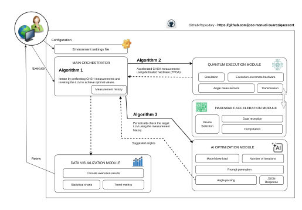
<figcaption class="paper-figure-caption"><b>Fig 1.</b> Figure 1. Hybrid architecture of QAccCert.</figcaption>
</figure>
<figure class="paper-figure-card">
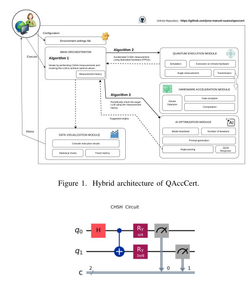
<figcaption class="paper-figure-caption"><b>Fig 2.</b> Figure 2. Quantum circuit for measuring non-locality in entangled states with some of the Ry gate rotations.</figcaption>
</figure>
<figure class="paper-figure-card">

<figcaption class="paper-figure-caption"><b>Fig 3.</b> Figure 3. FPGA acceleration scalability. Top: Total execution time for 41 iterations on a logarithmic scale. The CPU (red) scales linearly with the number of correlations (tCP U = ncorr × 41 × 0.00197 ms), while FPGA+USB 3.0 (blue) maintains a constant time (tF P GA = 41 × 0.00084 ms) thanks to parallel processing. The green area represents the cumulative FPGA advantage. Bottom: Resulting speedup, from 9.4× for CHSH (4 correlations) to &gt;2,400× for systems with 1024 correlations.</figcaption>
</figure>
<figure class="paper-figure-card">
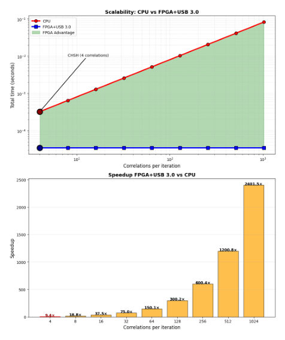
<figcaption class="paper-figure-caption"><b>Fig 4.</b> Figure 4 shows a snippet of the Verilog 6 code implemented on the FPGA, evidencing hardware-level optimization as part of the QSE architecture.</figcaption>
</figure>
<figure class="paper-figure-card">
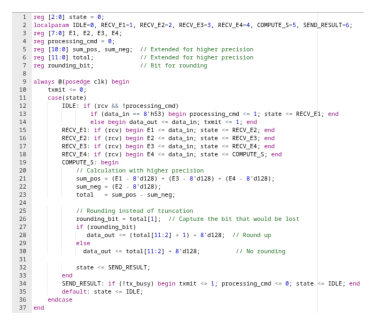
<figcaption class="paper-figure-caption"><b>Fig 5.</b> Figure 4. Verilog code snippet for correlation computation on the FPGA.</figcaption>
</figure>
</div>

<p><strong>Summary.</strong> This paper introduces QAccCert, a novel framework that addresses the challenge of certifying entangled states on imperfect quantum hardware. It achieves this by systematically integrating Artificial Intelligence (LLMs) as an adaptive optimizer with FPGA acceleration to efficiently calculate entanglement measures like CHSH violation. The work demonstrates a practical methodology for advancing quantum software engineering toward real-world NISQ applications.</p>
<p><strong>Why it may be interesting.</strong> It provides a concrete engineering roadmap for validating fundamental quantum properties (entanglement) in noisy devices by merging advanced computational techniques (AI/HPC) into the quantum software stack, which is crucial for future experimentalists.</p>
<details>
<summary>Detailed structure</summary>
<p><strong>Main problem.</strong> The core challenge is developing systematic, quantifiable methods (QSE) to certify quantum devices' ability to produce valid entangled states despite hardware noise and imperfections.</p>
<p><strong>Main result.</strong> The proposed hybrid framework achieves high fidelity in entanglement certification by integrating AI optimization with FPGA acceleration, significantly improving efficiency over random search.</p>
<p><strong>Method.</strong> It employs a hybrid architecture (QAccCert) that uses Large Language Models (LLMs) to guide the search for optimal measurement parameters, while FPGAs accelerate the computation of quantum correlations like the CHSH value.</p>
<p><strong>Model / system.</strong> The work focuses on certifying entanglement using the violation of the CHSH inequality ($S$) in simulated ideal quantum circuits, with explicit goals for deployment on real NISQ hardware.</p>
<p><strong>Key observables.</strong> CHSH inequality violation value ($S$), which must approach the theoretical maximum of $2\sqrt{2}$.</p>
<p><strong>Important parameters / regimes.</strong> The theoretical CHSH limit ($2\sqrt{2}$), and performance metrics like speedup factors (e.g., FPGA acceleration).</p>
<p><strong>Assumptions / limitations.</strong> The primary assumption is that combining QSE principles with heterogeneous technologies (AI/FPGA) provides a scalable solution for practical quantum certification.</p>
<p><strong>Figures summary.</strong> Figures illustrate the hybrid architecture of QAccCert, detailing modules like state preparation and AI optimization, and show performance comparisons demonstrating massive speedups achieved by FPGA acceleration over CPU computation.</p>
<p><strong>Paper structure.</strong> The paper introduces the need for QSE in quantum certification, details the QAccCert framework integrating FPGAs and LLMs, presents results showing superior performance metrics (fidelity and speed), and concludes with a discussion of scalability to real NISQ hardware.</p>
</details>
<details>
<summary>Abstract</summary>
<p>The emergence of Quantum Software Engineering (QSE) responds to the need for systematic, disciplined, and quantifiable approaches to the development, operation, and maintenance of quantum software. Within this context, quantum computer certification represents a significant challenge: verifying that quantum devices produce valid entangled states despite hardware imperfections, noise, and decoherence. This paper presents QAccCert, a hybrid certification framework developed following QSE principles, demonstrating how heterogeneous technologies like FPGAs and Artificial Intelligence can be integrated for quantum processing. The framework implements entanglement certification through CHSH inequality violation in ideal quantum simulations using Qiskit AerSimulator. Through LLM-guided optimization, the system achieves 99.94% of the theoretical maximum of $2\sqrt{2}$, evidencing more efficient parameter space exploration than random search. These simulated results illustrate how QSE methodologies, combined with strategic technology interconnection, can be applied for practical and scalable quantum certification on real NISQ hardware in future work. This study provides a concrete case study of systematic quantum software development.</p>
</details>
<p><sub><a href="#top">↑ back to top</a></sub></p>

<p><a id="paper-2607.07660"></a></p>
<h3 id="wavelength-resolved-small-angle-neutron-spectroscopy-of-spin-waves-in-mnsi-under-pressure"><a href="http://arxiv.org/abs/2607.07660v1">Wavelength-resolved small-angle neutron spectroscopy of spin waves in MnSi under pressure</a></h3>
<p><strong>Authors:</strong> E. V. Altynbaev, D. O. Skanchenko, Z. Xie, Y. Ke, Y. Bao, A. V. Tsvyashchenko<br>
<strong>Type:</strong> experiment · <strong>Category:</strong> strongly correlated electrons · <strong>PDF:</strong> <a href="https://arxiv.org/pdf/2607.07660v1">https://arxiv.org/pdf/2607.07660v1</a><br>
<strong>Analysis basis:</strong> full PDF text, analyzed in chunks
<strong>Topic relevance:</strong> <code>exotic spin models in light-matter</code> <strong>3/5</strong> · <code>spintronics-quantum-optics interface</code> <strong>3/5</strong> · <code>analog quantum simulation</code> <strong>2/5</strong> · <code>methods for driven-dissipative</code> <strong>1/5</strong> · <code>non-equilibrium dynamics</code> <strong>1/5</strong></p>
<div class="figure-strip-hint">↔ Scroll figures horizontally</div>
<div class="paper-figures-scroll">
<figure class="paper-figure-card">
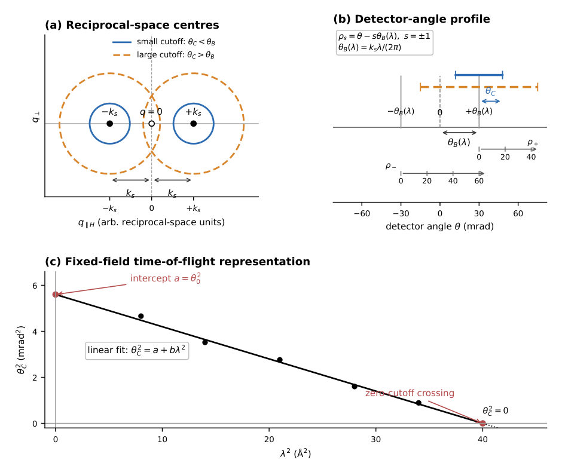
<figcaption class="paper-figure-caption"><b>Fig 1.</b> FIG. 1. Principle of wavelength-resolved SWSANS at a pulsed neutron source. (a) The inelastic SWSANS intensity is centered at the helimagnetic wave-vector positions ±ks in reciprocal space; both small- and large-cutoff cases are possible, corresponding to θC &lt; θB and θC &gt; θB. (b) For each wavelength slice the profile is analyzed in the local detector-angle coordinate ρs = θ−sθB(λ), with θB(λ) = ksλ/(2π); θC is the fitted cutoff-edge position in this local coordinate. (c) In the fixed-field time-of-flight representation, the extracted cutoff positions are fitted as θ2 C = a + bλ2. The intercept and the zero-cutoff crossing are the key quantities used to determine the cutoff-derived spin-wave...</figcaption>
</figure>
<figure class="paper-figure-card">
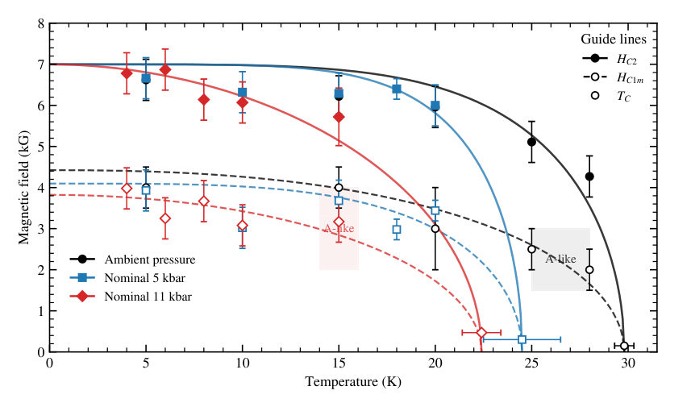
<figcaption class="paper-figure-caption"><b>Fig 2.</b> FIG. 2. Structural verification of the magnetic field scale for the ambient-pressure, nominal 5 kbar, and nominal 11 kbar powder datasets. Filled symbols show HC2(T), extracted from the disappearance of the elastic Bragg intensity, and open symbols show HC1m(T), defined as the field of maximum along-field Bragg intensity. Smooth monotonic root-like curves are guides to the eye constrained to vanish at the corresponding TC; they are not independent fits to the magnetic equation of state. Open markers at the baseline indicate TC anchors from zero-field temperature scans. Hatched colored boxes mark A-phase-like regions used as structural consistency checks.</figcaption>
</figure>
<figure class="paper-figure-card">
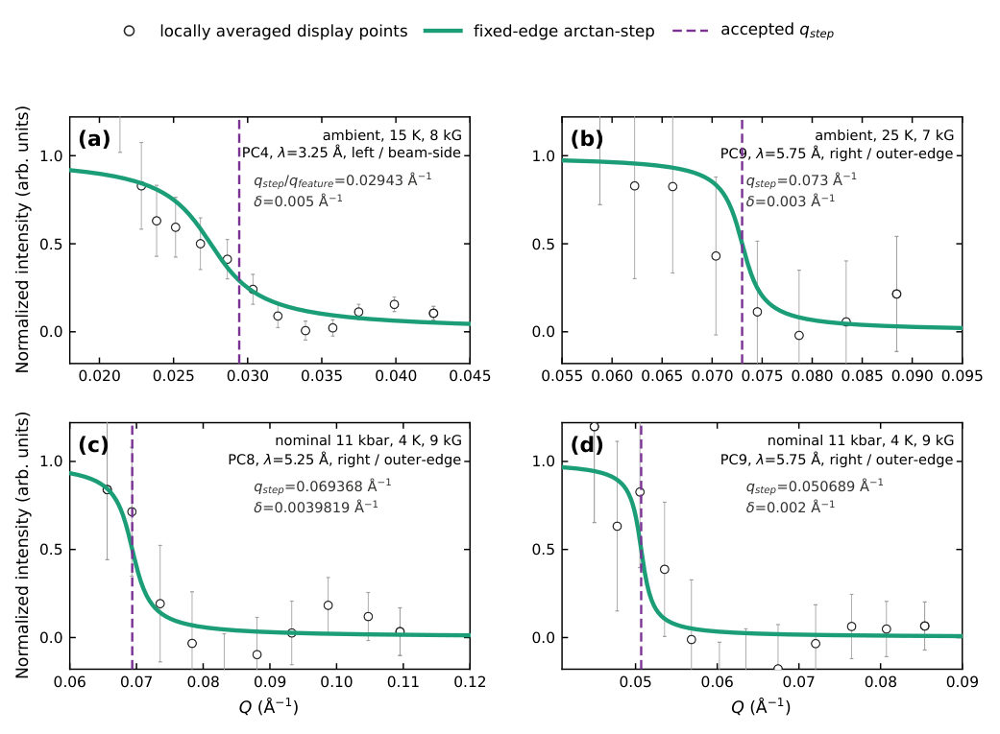
<figcaption class="paper-figure-caption"><b>Fig 3.</b> FIG. 3. Representative cutoff-edge fits used in the wavelength-resolved SWSANS analysis. (a,b) Ambient-pressure MnSi: a 15 K, 8 kG left/beam-side example from PC4 (λ = 3.25 ˚A), and a 25 K, 7 kG right/outer-edge example from PC9 (λ = 5.75 ˚A). (c,d) Nominal 11 kbar MnSi at 4 K and 9 kG: right/outer-edge examples from PC8 (λ = 5.25 ˚A) and PC9 (λ = 5.75 ˚A). Symbols show locally averaged display points used only for readability, green curves show representative phenomenological arctan-step fits, and dashed vertical lines mark the accepted edge positions in the instrument q coordinate before conversion to θC.</figcaption>
</figure>
<figure class="paper-figure-card">
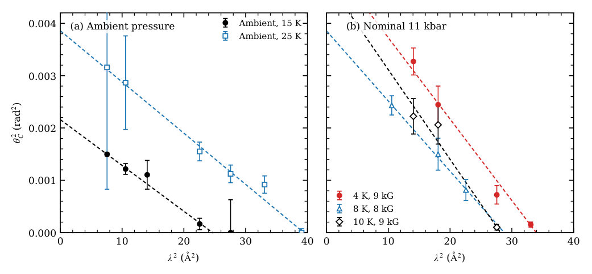
<figcaption class="paper-figure-caption"><b>Fig 4.</b> FIG. 4. Linear θ2 C(λ2) plots. (a) Ambient-pressure MnSi at 15 and 25 K. (b) Nominal 11 kbar MnSi at 4 K, 9 kG; 8 K, 8 kG; and 10 K, 9 kG. Symbols show θ2 C values and dashed lines show linear fits; the 8 K, 8 kG fit is extended to its θ2 C = 0 crossing.</figcaption>
</figure>
<figure class="paper-figure-card">
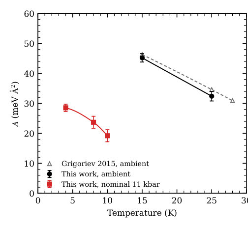
<figcaption class="paper-figure-caption"><b>Fig 5.</b> FIG. 5. Temperature dependence of the cutoff-derived spin- wave stiffness A. Filled symbols show the present wavelength- resolved SWSANS results at ambient pressure and at nominal 11 kbar. Open gray symbols and the dashed gray guide show the ambient-pressure reference scale from Ref. [11]. Solid curves are smooth monotonic guides to the eye through the present data, not additional fits.</figcaption>
</figure>
</div>

<p><strong>Summary.</strong> This work pioneers the use of wavelength-resolved small-angle neutron scattering ($    ext{SWSANS}$) to measure spin-wave stiffness ($A$) in $  ext{MnSi}$ under high pressure. By comparing dynamically measured $A$ values with structural predictions, the authors demonstrate a significant discrepancy at 11 kbar. This highlights that simple extrapolations from static magnetic parameters are insufficient for accurately characterizing quantum material properties under extreme conditions.</p>
<p><strong>Why it may be interesting.</strong> While focused on magnetism, the technique itself—using advanced neutron scattering kinematics (wavelength-resolved measurement) to probe collective excitations under extreme conditions—is highly relevant for understanding many-body dynamics in strongly correlated quantum materials.</p>
<details>
<summary>Detailed structure</summary>
<p><strong>Main problem.</strong> The study aims to determine how spin-wave stiffness ($A$) in $    ext{MnSi}$ changes under hydrostatic pressure, specifically testing the reliability of structural parameters versus direct dynamic measurements.</p>
<p><strong>Main result.</strong> At high pressure (11 kbar), the directly measured spin-wave stiffness ($A$) is substantially reduced compared to ambient pressure, demonstrating that $A$ cannot be reliably inferred solely from static structural magnetic parameters like the critical field ($H_{C2}$).</p>
<p><strong>Method.</strong> Wavelength-resolved small-angle neutron scattering ($   ext{SWSANS}$) was employed using a time-of-flight instrument on a pulsed source to measure spin-wave dynamics across a range of wavelengths.</p>
<p><strong>Model / system.</strong> The system is $ ext{MnSi}$, a benchmark B20 helimagnet exhibiting chiral magnetic order. The analysis relies on fitting the cutoff angle ($    heta_C$) derived from the intensity profile's edge position to extract the spin-wave stiffness $A$ via the relation $   heta_C^2 \propto \lambda^2$.</p>
<p><strong>Key observables.</strong> Cutoff angle ($    heta_C$), spin-wave stiffness ($A$), structural critical field ($H_{C2}$), and transition temperature ($T_C$).</p>
<p><strong>Important parameters / regimes.</strong> Ambient pressure values validate the method; at 11 kbar, $A$ is significantly reduced compared to ambient measurements.</p>
<p><strong>Assumptions / limitations.</strong> The analysis assumes a local linear dispersion relation for spin waves ($\varepsilon(q) \propto A q^2$) and that the measured $ heta_C(\lambda)$ follows a predictable quadratic dependence on wavelength squared ($    heta_C^2 = a + b\lambda^2$).</p>
<p><strong>Figures summary.</strong> Figures illustrate the principle of wavelength-resolved SANS, show structural verification of magnetic fields ($H_{C2}$) at various pressures, and present linear fits comparing ambient vs. high-pressure measurements.</p>
<p><strong>Paper structure.</strong> The paper first establishes the methodology by adapting fixed-wavelength SANS to a time-of-flight, wavelength-resolved geometry. It validates this method using ambient pressure data before applying it to measure spin dynamics at 5 kbar and 11 kbar, culminating in a comparison between dynamic ($A$) and static ($   ext{H}_{C2}$) measurements.</p>
</details>
<details>
<summary>Abstract</summary>
<p>We report wavelength-resolved spin-wave small-angle neutron scattering (SWSANS) on the time-of-flight SANS instrument BL01 at the China Spallation Neutron Source and extend the method to pressure-cell measurements of MnSi. MnSi is used as a benchmark B20 helimagnet because its helimagnetic order and spin-wave stiffness are well characterized at ambient pressure. In a fixed magnetic field, the time-of-flight measurement provides a spectrum of neutron wavelengths. For each detector branch $s=\pm1$, the intensity profile is recentered relative to the wavelength-dependent Bragg angle $θ_B (λ) = k_s λ/ 2π$, and the cutoff angle $θ_C (λ)$ is extracted in the local branch coordinate. The cutoff-derived spin-wave stiffness $A$ is obtained from a linear fit of $θ_C^2$ as a function of $λ^2$. Ambient-pressure measurements reproduce the known stiffness scale of MnSi. Structural SANS at ambient pressure and at nominal 5 and 11 kbar verifies the magnetic state and provides an internal pressure-state check for the pressure-cell measurements. At nominal 11 kbar, within the present cutoff model, the cutoff-derived stiffness is substantially reduced, whereas the structural field scale $H_{C2}$ remains high. This contrast shows that $A$ cannot be inferred from static structural parameters alone under pressure. To our knowledge, these measurements constitute the first SWSANS implementation on a pulsed neutron source and the first SWSANS determination of spin-wave stiffness under pressure. The experiment also shows that reliable high-pressure SWSANS on a pulsed source requires high source brilliance, stable wavelength-dependent normalization, and sufficient statistics in each wavelength window.</p>
</details>
<p><sub><a href="#top">↑ back to top</a></sub></p>

<p><a id="paper-2607.07041"></a></p>
<h3 id="a-low-energy-effective-hamiltonian-for-landau-quasiparticles-ii-application-to-the-contact-fermi-gas"><a href="http://arxiv.org/abs/2607.07041v1">A low-energy effective Hamiltonian for Landau quasiparticles: II Application to the contact Fermi gas</a></h3>
<p><strong>Authors:</strong> Pierre-Louis Taillat, Hadrien Kurkjian<br>
<strong>Type:</strong> theory · <strong>Category:</strong> quantum gases · <strong>PDF:</strong> <a href="https://arxiv.org/pdf/2607.07041v1">https://arxiv.org/pdf/2607.07041v1</a><br>
<strong>Analysis basis:</strong> full PDF text, analyzed in chunks
<strong>Topic relevance:</strong> <code>Keldysh / 2PI / non-Gaussian methods</code> <strong>3/5</strong> · <code>analog quantum simulation</code> <strong>3/5</strong> · <code>non-equilibrium dynamics</code> <strong>2/5</strong> · <code>methods for driven-dissipative</code> <strong>1/5</strong></p>
<div class="figure-strip-hint">↔ Scroll figures horizontally</div>
<div class="paper-figures-scroll">
<figure class="paper-figure-card">
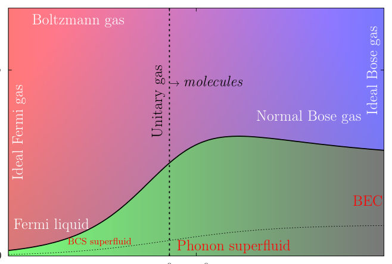
<figcaption class="paper-figure-caption"><b>Fig 1.</b> FIG. 1. Equilibrium phase diagram of the spin-1/2 Fermi gas with contact interactions. The</figcaption>
</figure>
<figure class="paper-figure-card">
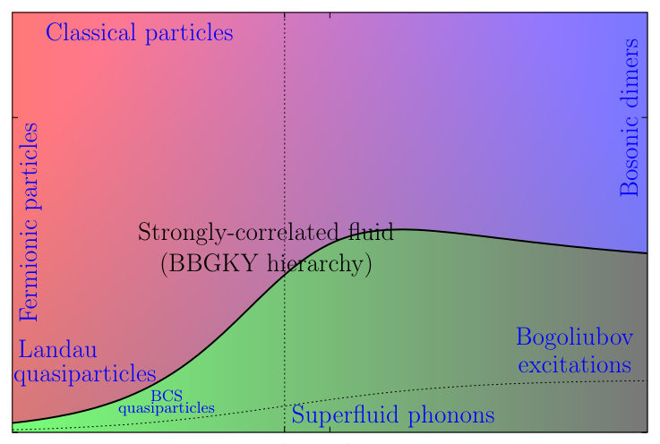
<figcaption class="paper-figure-caption"><b>Fig 2.</b> FIG. 2. The phase diagram showing (in blue) the microscopic degrees of freedom that support a</figcaption>
</figure>
<figure class="paper-figure-card">
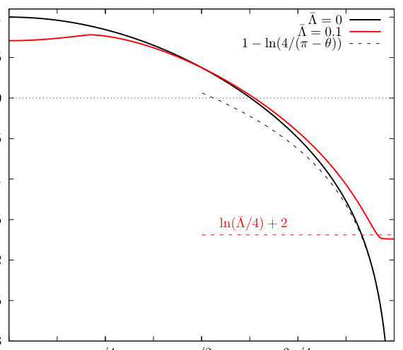
<figcaption class="paper-figure-caption"><b>Fig 3.</b> FIG. 3. Angular dependence of the function IΛ appearing in A↑↓and f↑↓. For ¯Λ = 0 (black</figcaption>
</figure>
<figure class="paper-figure-card">
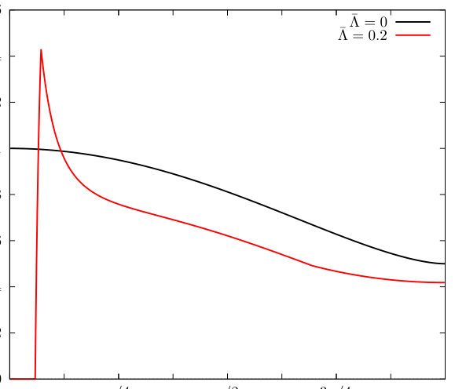
<figcaption class="paper-figure-caption"><b>Fig 4.</b> FIG. 4. Angular dependence of the function JΛ appearing in both A↑↓, f↑↓and Aσσ, fσσ. As ¯Λ →0, the function converges pointwise to J(θ) (black curve) on (0, π]. It is however cancelled in</figcaption>
</figure>
<figure class="paper-figure-card">
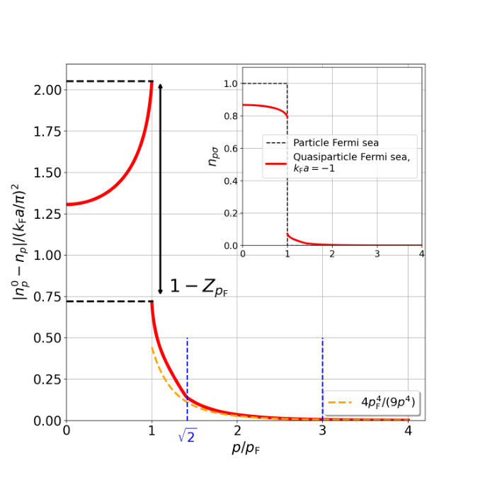
<figcaption class="paper-figure-caption"><b>Fig 5.</b> FIG. 5. (Main pannel) Difference between the particle momentum distribution n|FS⟩ p =</figcaption>
</figure>
</div>

<p><strong>Summary.</strong> This paper applies a sophisticated low-energy effective Hamiltonian formalism to study the physics of an interacting Fermi gas. It systematically calculates static properties and predicts corrections to dynamic quantities like zero sound velocity by analyzing the crossover between collisionless and hydrodynamic regimes. The methodology is crucial for understanding strongly correlated quantum gases near unitarity.</p>
<p><strong>Why it may be interesting.</strong> This work provides rigorous theoretical tools (effective Hamiltonians, systematic expansions) to calculate finite-temperature quantum many-body dynamics in ultracold atomic gases, bridging weak-coupling theory with complex transport phenomena.</p>
<details>
<summary>Detailed structure</summary>
<p><strong>Main problem.</strong> To develop and apply a low-energy effective Hamiltonian formalism for Landau quasiparticles to study the static and dynamic properties of a contact Fermi gas at low temperatures.</p>
<p><strong>Main result.</strong> The theory successfully recovers known static results (e.g., LHY expansion) and predicts a preexponential correction to the zero sound velocity, while also providing a numerical method to map the crossover between collisionless and hydrodynamic regimes.</p>
<p><strong>Method.</strong> The authors use perturbative renormalization techniques, including Schrieffer-Wolff unitary transformations, applied to the contact interaction potential. They solve transport equations numerically to analyze dynamic response functions.</p>
<p><strong>Model / system.</strong> The system is a two-component gas of ultracold fermionic atoms interacting via a short-range (contact) potential. The analysis focuses on the low-temperature regime and utilizes an effective Hamiltonian approach derived from renormalization group techniques.</p>
<p><strong>Key observables.</strong> Equation of state, momentum distribution, critical temperature ($T_c$), zero sound velocity ($c_0$), density and spin response functions ($    ext{Im}[ar{\chi}_p]$).</p>
<p><strong>Important parameters / regimes.</strong> Low temperatures, scattering length $a$, Fermi wave vector $k_F$, collision time $    au$. The analysis is perturbative in the limit $a 	o 0$.</p>
<p><strong>Assumptions / limitations.</strong> The calculations rely on a perturbative expansion (e.g., second order in $k_F a$), which limits controlled results to weak coupling regimes.</p>
<p><strong>Figures summary.</strong> Figures illustrate phase diagrams (BEC-BCS crossover), the angular dependence of calculated integrals ($I_\Lambda, J_\Lambda$), and numerical crossovers of response functions ($ ext{Im}[ar{\chi}_p]$) between hydrodynamic and collisionless limits.</p>
<p><strong>Paper structure.</strong> The paper first establishes the renormalization scheme for constructing the effective Hamiltonian. It then benchmarks this theory against known static properties before moving to dynamic calculations, focusing on zero sound velocity corrections and solving the transport equation across different dynamical regimes.</p>
</details>
<details>
<summary>Abstract</summary>
<p>This article follows up on arxiv:2511.15938, in which we developed a new renormalization scheme to construct a quantized theory of Fermi liquids. Here, we apply this formalism to a low-temperature atomic Fermi gas where the short-range interactions are fully parametrized by the s-wave scattering length $a$. We benchmark our renormalized theory by recovering known perturbative results on the static properties of the Fermi gas, such as the Lee-Huang-Yang expansion of the equation of state, the Galitskii expansion of the momentum distribution, and the Gor'kov- Melik Barkhudarov preexponential correction to the critical temperature. We then turn to the transport dynamics and demonstrate the presence of a preexponential correction to the speed of zero sound when including corrections of second order in $a$. Finally, we develop an efficient numerical method to solve the transport equation exactly, and we apply to study the crossover from the collisionless to the hydrodynamic regime in the density and polarisation response functions.</p>
</details>
<p><sub><a href="#top">↑ back to top</a></sub></p>

<p><a id="paper-2607.06866"></a></p>
<h3 id="disorder-signatures-in-coherent-electronic-waveguides"><a href="http://arxiv.org/abs/2607.06866v1">Disorder signatures in coherent electronic waveguides</a></h3>
<p><strong>Authors:</strong> Alejandro Lopez-Bezanilla<br>
<strong>Type:</strong> theory · <strong>Category:</strong> disordered systems and neural networks · <strong>PDF:</strong> <a href="https://arxiv.org/pdf/2607.06866v1">https://arxiv.org/pdf/2607.06866v1</a><br>
<strong>Analysis basis:</strong> full PDF text, analyzed in chunks
<strong>Topic relevance:</strong> <code>methods for driven-dissipative</code> <strong>3/5</strong> · <code>driven-dissipative phase transition</code> <strong>2/5</strong> · <code>Keldysh / 2PI / non-Gaussian methods</code> <strong>1/5</strong> · <code>Kondo &amp; dissipative impurity</code> <strong>1/5</strong> · <code>analog quantum simulation</code> <strong>1/5</strong> · <code>non-equilibrium dynamics</code> <strong>1/5</strong></p>
<div class="figure-strip-hint">↔ Scroll figures horizontally</div>
<div class="paper-figures-scroll">
<figure class="paper-figure-card">
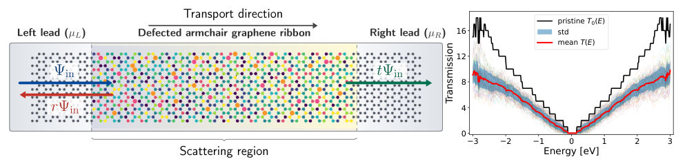
<figcaption class="paper-figure-caption"><b>Fig 1.</b> FIG. 1. Schematic transport setup and transmission statistics for a defected armchair graphene ribbon. The left panel shows a disordered scattering region connected to left and right defect-free leads with electrochemical potentials µL and µR. An incoming mode Ψin from the left lead is partially reflected, rΨin, and partially transmitted, tΨin, through the defected channel; colored sites indicate spatial disorder in the ribbon. The right panel shows the corresponding ensemble transmission T(E) as a function of energy. Thin curves denote individual disorder realizations, the red curve is the ensemble-averaged transmission ⟨T(E)⟩, the blue band indicates the standard deviation, and the black...</figcaption>
</figure>
<figure class="paper-figure-card">
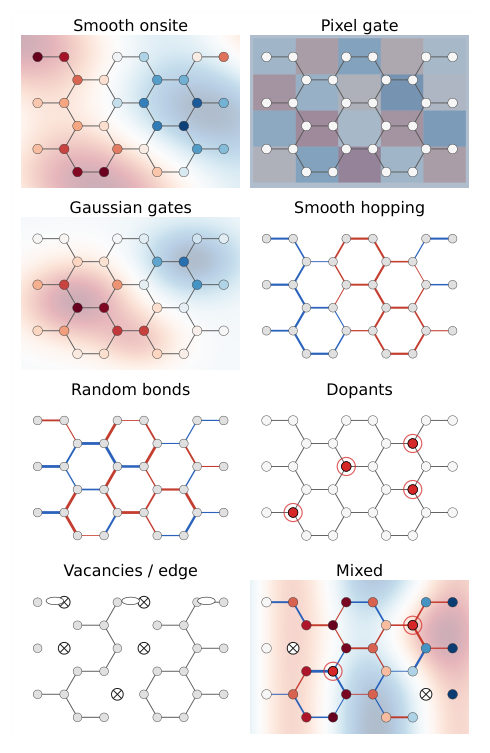
<figcaption class="paper-figure-caption"><b>Fig 2.</b> FIG. 2. Catalog of disorder mechanisms used in the conductance-balanced transport ensemble. The panels schematically represent scalar onsite perturbations, gate- defined potentials, hopping-amplitude disorder, localized dopants, vacancies and edge roughness, and mixed perturba- tions. The figure provides a schematic overview of the Hamil- tonian modifications applied to the finite scattering region, rather than a literal microscopic realization from the dataset; the semi-infinite leads remain pristine.</figcaption>
</figure>
<figure class="paper-figure-card">
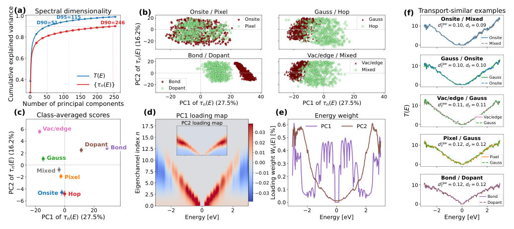
<figcaption class="paper-figure-caption"><b>Fig 3.</b> FIG. 3. Principal-component analysis of the conductance-balanced transport ensemble. (a) Cumulative explained variance for the scalar transmission T(E) and the transmission-eigenvalue spectrum {τn(E)}. (b) Individual disorder realizations projected onto the first two principal components of {τn(E)}, showing the overlap and separation of representative classes in transport space. (c) Class-averaged PC1-PC2 scores for {τn(E)}; error bars denote the standard error of the mean. (d,e) Loading maps of the first two principal components, u1(E, n) and u2(E, n), resolved by energy and sorted transmission-eigenvalue index n. (f) Energy-resolved loading weights Wα(E) = P</figcaption>
</figure>
<figure class="paper-figure-card">
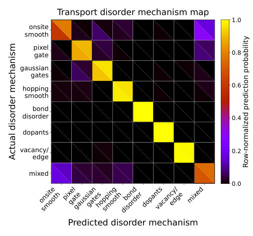
<figcaption class="paper-figure-caption"><b>Fig 4.</b> FIG. 4. Transport distinguishability map for the conductance-balanced disorder ensemble. Rows denote the actual disorder mechanism and columns the predicted mech- anism. The plotted entries are row-normalized prediction probabilities, Eq. (20). Each square is split by input represen- tation: lower-left triangles use the total transmission T(E), while upper-right triangles use the transmission-eigenvalue spectra {τn(E)}. Large diagonal entries indicate disorder mechanisms whose spectra are assigned to their own class, whereas off-diagonal entries reveal disorder classes with simi- lar conductance-balanced transport responses.</figcaption>
</figure>
<figure class="paper-figure-card">
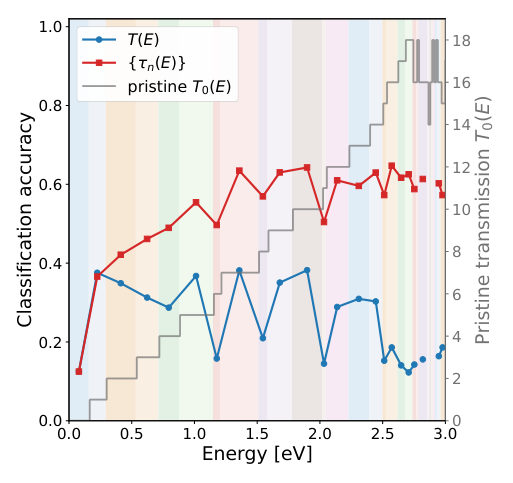
<figcaption class="paper-figure-caption"><b>Fig 5.</b> FIG. 5. Spectral-shape controls for the conductance- balanced disorder ensemble. The figure compares disorder- class classification after transformations that suppress abso- lute conductance scale: raw spectra, area-normalized spec- tra, per-spectrum standardized spectra, and finite-difference spectra for the scalar transmission. Robust performance un- der area normalization and standardization indicates that the learned fingerprints are carried by spectral shape and channel redistribution rather than by average transmission.</figcaption>
</figure>
</div>

<p><strong>Summary.</strong> This paper introduces a novel, AI-driven protocol to diagnose the underlying physical mechanism of disorder in coherent electronic waveguides. By comparing detailed spectral features—specifically transmission eigenvalues rather than just average conductance—the authors show that distinct types of microscopic disorder leave unique, measurable fingerprints. This establishes a powerful metrological tool for interpreting complex quantum transport measurements.</p>
<p><strong>Why it may be interesting.</strong> This work bridges condensed matter theory (quantum transport in disordered systems) with modern machine learning techniques (AI-assisted pattern recognition), providing new diagnostic tools for analyzing complex many-body scattering data that might be relevant to open quantum system characterization.</p>
<details>
<summary>Detailed structure</summary>
<p><strong>Main problem.</strong> To develop a robust method for identifying specific microscopic disorder mechanisms within coherent electronic waveguides, overcoming the challenge that different physical disorders can yield similar average conductance.</p>
<p><strong>Main result.</strong> The analysis establishes a controlled AI-assisted protocol showing that mechanism-specific fingerprints of disorder persist in the spectral shape and eigenchannel redistribution, even when total average conductance is artificially matched across different disorder classes.</p>
<p><strong>Method.</strong> The authors use a conductance-balanced learning framework, comparing scalar transmission spectra with transmission-eigenvalue spectra using supervised classification and Principal Component Analysis (PCA).</p>
<p><strong>Model / system.</strong> The primary model uses armchair graphene nanoribbons as controlled multi-channel tight-binding waveguides. Disorder is introduced via onsite potential variations, hopping changes, or discrete defects.</p>
<p><strong>Key observables.</strong> Total transmitted weight $T(E)$, transmission eigenvalues $\{	au_n(E)\}$, and PCA loadings identifying energy/eigenchannel sectors responsible for spectral deformations.</p>
<p><strong>Important parameters / regimes.</strong> Energy ($E$), disorder strength (controlled via specific mechanisms like onsite vs. hopping), and the number of active channels (multichannel regime).</p>
<p><strong>Assumptions / limitations.</strong> The analysis relies on controlling the average conductance ($\langle T(E) 
angle$) to isolate mechanism-specific spectral features, acknowledging that a unique reconstruction from external observables is generally impossible.</p>
<p><strong>Figures summary.</strong> Figures schematically illustrate the setup comparing ensemble transmission $T(E)$ versus $\langle T(E) 
angle$, and the core analysis involves comparing scalar vs. eigenvalue spectra using various diagnostic tools.</p>
<p><strong>Paper structure.</strong> The paper progresses by first defining the physical model (disordered waveguides), then developing a controlled comparison framework (conductance balancing), applying advanced diagnostics (eigenvalue/PCA analysis), and concluding with the establishment of a general, mechanism-specific metrological protocol for quantum transport data.</p>
</details>
<details>
<summary>Abstract</summary>
<p>Microscopic disorder in a coherent conductor is encoded in the magnitude of the transmitted current and in the energy- and channel-resolved structure of the scattering response. We develop a conductance-balanced learning framework for identifying microscopic disorder mechanisms from coherent quantum-transport spectra. Using armchair graphene nanoribbons as controlled multichannel tight-binding waveguides, we generate ensembles in which distinct disorder classes occupy the same intervals of integrated transmission, removing the dominant shortcut associated with average conductance. Within this constrained setting, we compare scalar transmission spectra with transmission-eigenvalue spectra, and use supervised classification, scale-normalizing controls, plateau-resolved tests, and principal-component analysis to identify the spectral structures that remain informative. The learned distinctions persist after normalization of the conductance envelope and are strongest in multichannel energy windows, where mode mixing and channel redistribution shape the scattering response. Principal components provide interpretable transport coordinates whose loadings identify the energy and eigenchannel sectors responsible for the dominant spectral deformations. The results establish a controlled AI-assisted protocol for learning disorder signatures from nonlinear quantum-scattering data.</p>
</details>
<p><sub><a href="#top">↑ back to top</a></sub></p>

<p><a id="paper-2607.07583"></a></p>
<h3 id="vacuum-polarization-and-renormalized-stress-energy-tensor-of-spherical-thin-shells"><a href="http://arxiv.org/abs/2607.07583v1">Vacuum polarization and renormalized stress-energy tensor of spherical thin shells</a></h3>
<p><strong>Authors:</strong> Julio Arrechea, Cormac Breen, Adrian Ottewill, Lorenzo Pisani, Peter Taylor<br>
<strong>Type:</strong> theory · <strong>Category:</strong> other · <strong>PDF:</strong> <a href="https://arxiv.org/pdf/2607.07583v1">https://arxiv.org/pdf/2607.07583v1</a><br>
<strong>Analysis basis:</strong> full PDF text, analyzed in chunks
<strong>Topic relevance:</strong> <code>Keldysh / 2PI / non-Gaussian methods</code> <strong>3/5</strong> · <code>correlated / nonlocal dissipation</code> <strong>1/5</strong> · <code>driven-dissipative phase transition</code> <strong>1/5</strong> · <code>entanglement &amp; information structure</code> <strong>1/5</strong> · <code>methods for driven-dissipative</code> <strong>1/5</strong> · <code>non-equilibrium dynamics</code> <strong>1/5</strong> · <code>non-equilibrium universality</code> <strong>1/5</strong></p>
<div class="figure-strip-hint">↔ Scroll figures horizontally</div>
<div class="paper-figures-scroll">
<figure class="paper-figure-card">
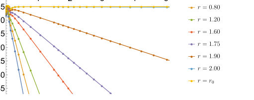
<figcaption class="paper-figure-caption"><b>Fig 1.</b> FIG. 3: Analysis of the convergence of gωl(r) −k(0) ωl (r) for a massless scalar field on the Minkowski interior of the thin shell at different radial points for fixed l and large ω. Results obtained with the set of parameters: r0 = 2.001M and l = 1. The figure shows how the order of convergence decreases as r →r0. On the surface, the function gωl(r0) −k(0) ωl (r0) scales as ω−2 at large ω</figcaption>
</figure>
<figure class="paper-figure-card">
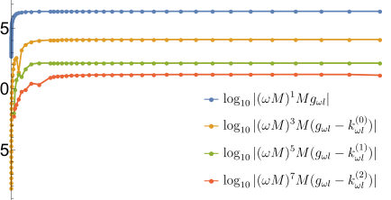
<figcaption class="paper-figure-caption"><b>Fig 2.</b> FIG. 1: Analysis of the convergence of gωl(r) −k(m) ωl (r) for a massless scalar field on the exterior of the thin shell for r ≫r0 at different orders of expansion m for fixed l and large ω. Results obtained with the set of parameters: r0 = 2.001M, r = 5M and l = 1.</figcaption>
</figure>
<figure class="paper-figure-card">
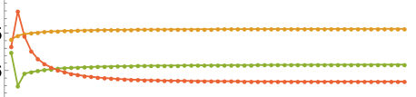
<figcaption class="paper-figure-caption"><b>Fig 3.</b> FIG. 2: Analysis of the convergence of gωl(r) −k(m) ωl (r) for a massless scalar field on the exterior of the thin shell for r ≫r0 at different orders of expansion m for fixed ω and large l. Results obtained with the set of parameters: r0 = 2.001M, r = 5M and ωM = 0.01.</figcaption>
</figure>
<figure class="paper-figure-card">
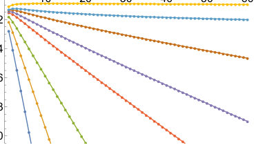
<figcaption class="paper-figure-caption"><b>Fig 4.</b> FIG. 4: Analysis of the convergence of gωl(r) −k(0) ωl (r) for a massless scalar field on the Minkowski interior of the thin shell at different radial points for fixed ω and large l. Results obtained with the set of parameters: r0 = 2.001M and ωM = 0.01. The figure shows how the order of convergence decreases as r →r0. On the surface, the function gωl(r0) −k(0) ωl (r0) scales as l−1 at large l.</figcaption>
</figure>
<figure class="paper-figure-card">
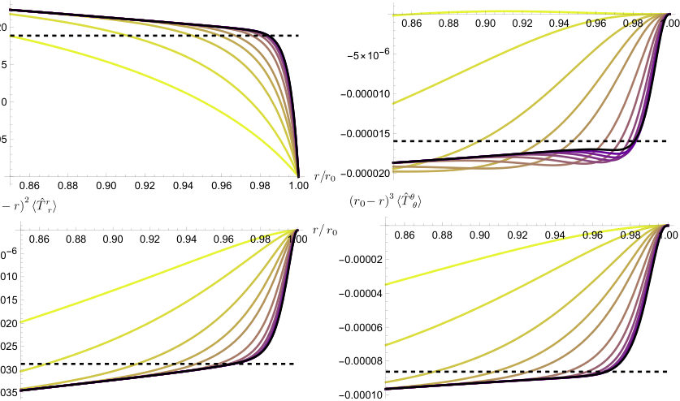
<figcaption class="paper-figure-caption"><b>Fig 5.</b> FIG. 5: Renormalized vacuum polarization and renormalized stress-energy tensor of a massless, minimally coupled scalar field inside a spherical thin shell of radius r0 = 3M. The colored curves are purely numerical results obtained by summing up to increasing ℓvalues and integrating up to ωM = 20. The black dashed lines correspond to the coefficient of the leading-order analytic divergence estimated through the WKB approximation. A tendency to approximate these values is visible for the vacuum polarization and all RSET components.</figcaption>
</figure>
</div>

<p><strong>Summary.</strong> This paper provides a detailed theoretical investigation into how quantum fields behave near a spherical thin shell. By calculating the renormalized stress-energy tensor, it addresses technical challenges in curved spacetime QFT and suggests that vacuum effects outside highly compact objects might exhibit universal behavior resembling those of a Schwarzschild black hole.</p>
<p><strong>Why it may be interesting.</strong> While focused on general relativity/QFT in curved spacetime, the rigorous handling of vacuum expectation values and renormalization procedures is foundational for understanding quantum field theory near boundaries or horizons, which has parallels in open quantum systems.</p>
<details>
<summary>Detailed structure</summary>
<p><strong>Main problem.</strong> The study calculates the renormalized vacuum polarization and stress-energy tensor for quantum fields in the curved spacetime generated by a spherical, static thin shell.</p>
<p><strong>Main result.</strong> The calculations show that outside the shell, the vacuum observables approach those of a Schwarzschild black hole in the appropriate limit, suggesting a universality principle.</p>
<p><strong>Method.</strong> The authors employ advanced techniques including the extended-coordinate prescription and mode-sum renormalization to handle divergences in curved spacetime quantum field theory.</p>
<p><strong>Model / system.</strong> The system is a spherical thin shell separating a Minkowski interior from an exterior geometry that approaches a black hole background. The fields considered are massless scalar fields.</p>
<p><strong>Key observables.</strong> Renormalized vacuum polarization (RVP) and the renormalized stress-energy tensor ($\langle \hat{T}_{\alphaeta} 
angle^{	ext{ren}}$).</p>
<p><strong>Important parameters / regimes.</strong> Shell compactness, field couplings, and the approach to the black hole limit.</p>
<p><strong>Assumptions / limitations.</strong> The analysis relies on approximations like the weak-field expansion near the shell surface and assumes the validity of the extended-coordinate prescription for renormalization.</p>
<p><strong>Paper structure.</strong> The paper develops the formalism using the extended-coordinate method, analyzes singular behavior near the shell surface using multiple approximation techniques, computes non-local Casimir-like contributions at the center, and finally applies semiclassical Einstein equations to compute backreaction effects.</p>
</details>
<details>
<summary>Abstract</summary>
<p>We provide a thorough study of the properties of the Boulware vacuum in the spacetime of a spherical, static thin shell with a Minkowski interior. To this end, we calculate the renormalized vacuum polarization and stress-energy tensor of massless scalar fields via the extended-coordinate prescription, paying particular attention to their scaling as the shell approaches the black hole limit. Near the surface of the thin shell, we obtain the expected leading-order singular behavior of both quantities via two independent methods: a high-frequency approximation for the modes, and a weak-field approximation. At the center of the shell we find non-local, Casimir-like contributions that remain finite in the black hole limit, and whose backreaction effects we compute via the semiclassical Einstein equations. Away from these regions amenable to analytic treatment, we obtain numerical results for a wide range of shell compactnesses and field couplings. In the black hole limit, we show that the vacuum polarization and renormalized stress-energy tensor outside the shell quickly approach the ones generated by a Schwarzschild black hole, suggesting a possible universality in the vacuum outside highly compact horizonless objects. This work addresses the conceptual and technical aspects necessary for computing renormalized expectation values in matter configurations, laying the foundations for future explorations on the subject.</p>
</details>
<p><sub><a href="#top">↑ back to top</a></sub></p>

<p><a id="paper-2607.06752"></a></p>
<h3 id="feynmans-clock-and-hierarchy-informed-sampling-for-quantum-error-mitigation"><a href="http://arxiv.org/abs/2607.06752v1">Feynman's clock and hierarchy-informed sampling for quantum error mitigation</a></h3>
<p><strong>Authors:</strong> Theo Saporiti<br>
<strong>Type:</strong> theory · <strong>Category:</strong> quantum information and computing · <strong>PDF:</strong> <a href="https://arxiv.org/pdf/2607.06752v1">https://arxiv.org/pdf/2607.06752v1</a><br>
<strong>Analysis basis:</strong> full PDF text, analyzed in chunks
<strong>Topic relevance:</strong> <code>methods for driven-dissipative</code> <strong>3/5</strong> · <code>quantum measurements</code> <strong>2/5</strong> · <code>Keldysh / 2PI / non-Gaussian methods</code> <strong>1/5</strong> · <code>correlated / nonlocal dissipation</code> <strong>1/5</strong> · <code>driven-dissipative phase transition</code> <strong>1/5</strong></p>
<div class="figure-strip-hint">↔ Scroll figures horizontally</div>
<div class="paper-figures-scroll">
<figure class="paper-figure-card">
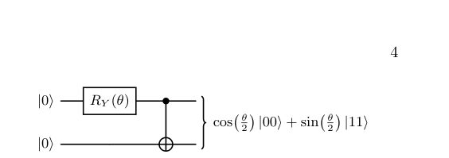
<figcaption class="paper-figure-caption"><b>Fig 1.</b> FIG. 1. The tunable Bell state preparation circuit U = U(θ), acting on NQ = 2 qubits |ϕ⟩D = |00⟩and composed of NG = 2 gates, U1 = RY (θ) and U2 = CNOT. Both first- and second- qubit Z-measurements have value cos(θ/2)2 −sin(θ/2)2 = cos(θ).</figcaption>
</figure>
<figure class="paper-figure-card">
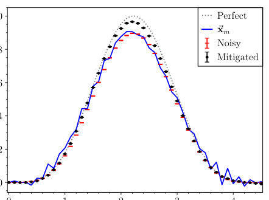
<figcaption class="paper-figure-caption"><b>Fig 2.</b> FIG. 2. Mitigation of the first (5) quantity representing the first-qubit Z-measurement of U(θ = 0) with r = 3. The dot- ted gray line is the analytical evolution computed with (2), the red data points are obtained with the Hadamard test re- sults as explained in Sec. II B, the black data points are the final results of the mitigation, and the blue line represents an example of a configuration in the Simulated Annealing pro- cedure outlined in Sec. II C.</figcaption>
</figure>
<figure class="paper-figure-card">
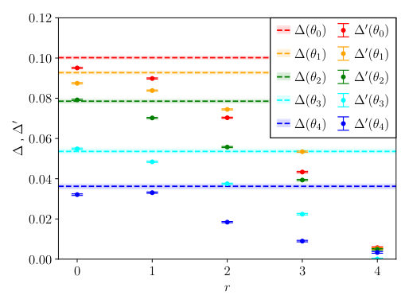
<figcaption class="paper-figure-caption"><b>Fig 3.</b> FIG. 3. Quantum error reduction of all first-qubit Z- measurements for different choices of r and θ = θk. Each dashed line and data points color is associated to a corre- sponding θk.</figcaption>
</figure>
<figure class="paper-figure-card">
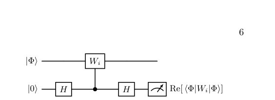
<figcaption class="paper-figure-caption"><b>Fig 4.</b> FIG. 4. Hadamard test for the real part of ⟨Φ|Wi|Φ⟩.</figcaption>
</figure>
</div>

<p><strong>Summary.</strong> This paper introduces an advanced quantum error mitigation technique called BBGKY-ISM, which adapts the scheme from spin chains to work on any quantum circuit. It achieves this by mapping circuit evolution onto Hamiltonian dynamics using a Feynman clock and estimating necessary expectation values via Hadamard tests. The method systematically reduces noise in simulations of quantum circuits, offering a controllable post-processing tool for near-term quantum computation.</p>
<p><strong>Why it may be interesting.</strong> It provides a powerful, general framework (BBGKY-ISM) that extends beyond specific physical models like spin chains to mitigate noise in arbitrary quantum circuits relevant to NISQ devices.</p>
<details>
<summary>Detailed structure</summary>
<p><strong>Main problem.</strong> Developing an efficient quantum error mitigation technique for near-term quantum computers operating under noisy intermediate-scale quantum (NISQ) conditions.</p>
<p><strong>Main result.</strong> The proposed BBGKY-ISM method systematically reduces quantum noise in arbitrary circuits, with the error reduction being controllable by increasing the self-consistency radius $r$.</p>
<p><strong>Method.</strong> It maps circuit execution to Hamiltonian dynamics using a Feynman clock and applies the BBGKY-ISM scheme, which uses Hadamard tests over partial executions to estimate expectation values.</p>
<p><strong>Model / system.</strong> The method is generalized from spin chains to arbitrary quantum circuits ($U$), utilizing a Feynman clock Hamiltonian $H$ to track time evolution. The analysis is demonstrated on tunable Bell state preparation circuits.</p>
<p><strong>Key observables.</strong> $\langle g|\sigma^3_i|g'
angle_D$, $\Delta(	heta)$ (noisy error), and $\Delta'(	heta)$ (mitigated error).</p>
<p><strong>Important parameters / regimes.</strong> Circuit size, number of qubits ($N_Q$), gate count ($N_G$), and the self-consistency radius $r$.</p>
<p><strong>Assumptions / limitations.</strong> The method is presented as a post-processing technique; it assumes $|ar{x}_{qs}| < 1$ in one analysis section.</p>
<p><strong>Figures summary.</strong> Figures illustrate the tunable Bell state preparation circuit, and show comparisons of noisy versus mitigated measurements ($\Delta'$ vs $\Delta$) across different radii $r$.</p>
<p><strong>Paper structure.</strong> The paper introduces the problem, details mapping circuits to Hamiltonian dynamics via a clock register, describes using Hadamard tests for expectation values, and then applies the BBGKY-ISM scheme with simulated annealing sampling to demonstrate systematic error reduction.</p>
</details>
<details>
<summary>Abstract</summary>
<p>Near-term physical implementations of quantum algorithms require efficient quantum error mitigation schemes to reduce quantum noise. In this letter we propose a new mitigation technique, by extending the applicability of our BBGKY-ISM scheme from quantum simulations of spin chains to arbitrary quantum circuits. We map executions of quantum circuits using Feynman's clock Hamiltonian to the Hamiltonian dynamics of a corresponding quantum system, whose time evolution obeys a BBGKY-like hierarchy of equations informing the BBGKY-ISM mitigation. We show that the method's classical and quantum overheads are polynomial in the circuit size and in the number of qubits. We apply our method to numerical simulations of tunable Bell state preparation circuits under state-of-the-art quantum noise, and numerically demonstrate its systematic and controllable quantum error reduction capability.</p>
</details>
<p><sub><a href="#top">↑ back to top</a></sub></p>

<p><a id="paper-2607.07378"></a></p>
<h3 id="quantitative-dftdmft-description-of-spectra-and-transport-in-the-moderately-correlated-metal-srvomath588math"><a href="http://arxiv.org/abs/2607.07378v1">Quantitative DFT+DMFT description of spectra and transport in the moderately correlated metal SrVO$_3$</a></h3>
<p><strong>Authors:</strong> Gurshidali P., N. S. Vidhyadhiraja<br>
<strong>Type:</strong> theory · <strong>Category:</strong> strongly correlated electrons · <strong>PDF:</strong> <a href="https://arxiv.org/pdf/2607.07378v1">https://arxiv.org/pdf/2607.07378v1</a><br>
<strong>Analysis basis:</strong> full PDF text, analyzed in chunks
<strong>Topic relevance:</strong> <code>Keldysh / 2PI / non-Gaussian methods</code> <strong>3/5</strong> · <code>analog quantum simulation</code> <strong>2/5</strong> · <code>Kondo &amp; dissipative impurity</code> <strong>1/5</strong> · <code>methods for driven-dissipative</code> <strong>1/5</strong> · <code>non-equilibrium dynamics</code> <strong>1/5</strong></p>
<div class="figure-strip-hint">↔ Scroll figures horizontally</div>
<div class="paper-figures-scroll">
<figure class="paper-figure-card">
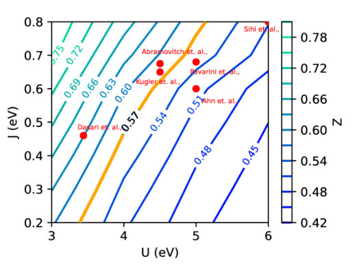
<figcaption class="paper-figure-caption"><b>Fig 1.</b> FIG. 1. Contour map of the quasiparticle weight Z in the U–J plane for SrVO3, computed within DFT+DMFT using the MO-IPT impurity solver. The solid curves denote iso-Z contours, with the corresponding quasiparticle weights indi- cated by the legend and the color bar.</figcaption>
</figure>
<figure class="paper-figure-card">
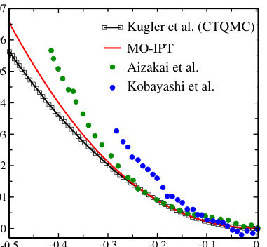
<figcaption class="paper-figure-caption"><b>Fig 2.</b> FIG. 2. Comparison of the real-frequency self-energy of SrVO3 obtained from DFT+DMFT using the MO-IPT im- purity solver (red line) with the CTQMC results of Ref. [26] (black squares) for U = 4.5 eV, J = 0.65 eV, and T = 116 K. Also shown are the self-energies from the experimen- tal ARPES momentum distribution curve from Refs. [10, 54] (green and blue symbols), measured below 20 K.</figcaption>
</figure>
<figure class="paper-figure-card">
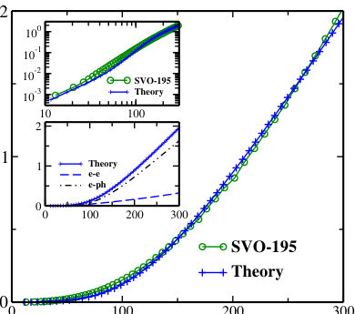
<figcaption class="paper-figure-caption"><b>Fig 3.</b> FIG. 3. Comparison of the measured dc resistivity of ul- traclean SrVO3 (green circles) with the calculated resistiv- ity (plus symbols), showing good agreement over the entire temperature range. The upper inset replots the same data on a log–log scale to emphasize the low-temperature behav- ior. The lower inset decomposes the calculated resistivity into electron–electron (e–e, dashed line) and electron–phonon (e– ph, dash–dot–dot line) contributions, together with the to- tal resistivity (solid line). The two scattering mechanisms contribute equally near ∼80 K, marking the crossover from electron–electron- to electron–phonon-dominated transport.</figcaption>
</figure>
<figure class="paper-figure-card">
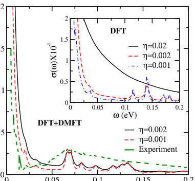
<figcaption class="paper-figure-caption"><b>Fig 4.</b> FIG. 4. Optical conductivity of SrVO3 calculated within DFT+DMFT using the MO-IPT impurity solver for U = 4.5 eV and J = 0.65 eV at T ≈6 K. Results for broadening parameters η = 0.002 (black solid line) and η = 0.001 (red dashed line) are compared with the experimental spectrum (green dashed line) of a highly stoichiometric sample with residual resistivity ratio RRR = 130, digitized from Ref. [24]. Inset: Non-interacting optical conductivity calculated from the DFT Wannier Hamiltonian for several values of the broad- ening parameter η.</figcaption>
</figure>
<figure class="paper-figure-card">
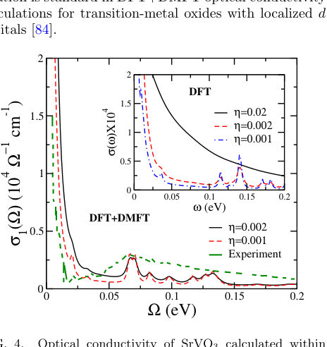
<figcaption class="paper-figure-caption"><b>Fig 5.</b> Fig. 4 displays the optical conductivity computed us- ing Eq. (20) within the DFT+DMFT (MO-IPT) frame- work for the interaction parameters U = 4.5 eV and J = 0.65 eV [26]. The fully interacting theoretical opti- cal conductivities obtained using broadening parameters η = 0.002 (black line) and η = 0.001 (red dashed line) are compared directly with the high-resolution experimen- tal data digitized from Ref. [24] for a very clean sample with residual resistivity ratio RRR = 130 measured at T ≈6 K. The optical conductivity profile is characterized by two distinct low-energy features. In the limit Ω≪W, the spectrum is dominated by a coherent Drude response arising from intraband transitions...</figcaption>
</figure>
</div>

<p><strong>Summary.</strong> This paper applies the powerful DFT+DMFT method to study the electronic and transport properties of SrVO3, a moderately correlated metal. By using an advanced MO-IPT solver, the authors achieve quantitative agreement between theory and experiment for both resistivity and optical conductivity across various conditions. The work demonstrates that low-energy physics in this material is well-described by quasiparticle coherence within the $t_{2g}$ manifold.</p>
<p><strong>Why it may be interesting.</strong> While focused on solids, the rigorous application of advanced many-body techniques like DMFT to predict measurable quantities (like optical response) provides a model for understanding strongly interacting quantum systems whose dynamics are governed by local correlations.</p>
<details>
<summary>Detailed structure</summary>
<p><strong>Main problem.</strong> The central challenge is achieving a quantitative, material-specific description of both spectral and transport properties in strongly correlated materials.</p>
<p><strong>Main result.</strong> The DFT+DMFT framework successfully provides a unified scheme showing good agreement between calculated observables (resistivity, optical conductivity) and experimental measurements for SrVO3 across relevant temperature and frequency ranges.</p>
<p><strong>Method.</strong> The study combines Density Functional Theory with Dynamical Mean-Field Theory ($    ext{DFT}+   ext{DMFT}$), utilizing a real-frequency multi-orbital iterative perturbation theory ($    ext{MO-IPT}$) solver.</p>
<p><strong>Model / system.</strong> The system is SrVO3, treated as a prototypical, moderately correlated metal whose low-energy physics is governed by the degenerate $t_{2g}$ active space. The calculation uses a Wannier-projected multi-orbital Hubbard model derived from DFT inputs.</p>
<p><strong>Key observables.</strong> Single-particle spectra, dc resistivity ($
ho$), and optical conductivity ($\sigma(\omega)$).</p>
<p><strong>Important parameters / regimes.</strong> The low-frequency, low-temperature regime; the quasiparticle weight is noted as a key parameter governing the low-energy physics.</p>
<p><strong>Assumptions / limitations.</strong> Approximations include neglecting vertex corrections for transport calculations and using the single-site DMFT approximation. The $  ext{MO-IPT}$ solver avoids analytical continuation to real frequencies.</p>
<p><strong>Paper structure.</strong> The paper establishes the need for quantitative theory, details the DFT+DMFT methodology (including Wannierization and MO-IPT), presents calculations of spectral functions and transport properties ($
ho$, $\sigma(\omega)$) for SrVO3, and concludes by interpreting the agreement with experiment.</p>
</details>
<details>
<summary>Abstract</summary>
<p>A quantitative, material-specific account of spectral and transport properties remains a central challenge in the theory of strongly correlated materials. Combining density functional theory with dynamical mean-field theory (DFT+DMFT) has proven to be a powerful approach for treating electron correlation effects and material specificity on an equal footing. Here, we examine the single-particle spectra and the dc and optical conductivity of SrVO$_3$, a prototypical, moderately correlated metal, within this framework. The degenerate $t_{2g}$ active space of SrVO$_3$, together with its well-established Fermi-liquid behavior, admits an effective-mass description governed by a single quasiparticle weight, yielding a nearly universal picture of the low-frequency, low-temperature regime. Employing a computationally efficient, real-frequency multi-orbital iterative perturbation theory (MO-IPT) impurity solver, we find reasonable agreement with experimental measurements of dc resistivity and optical conductivity across the entire experimentally relevant $(ω, T)$ range within a single, unified scheme. The agreement is shown to not depend on specific interaction parameters provided the quasiparticle weight is kept constant. These results indicate that, in SrVO$_3$, the $\mathbf{k}$-dependence of the self-energy may be weak, and vertex corrections may not dominate the dc and optical transport in this material.</p>
</details>
<p><sub><a href="#top">↑ back to top</a></sub></p>

<p><a id="paper-2607.06814"></a></p>
<h3 id="microscopic-dynamical-entropy-ii-statistical-and-stochastic-thermodynamics-of-hamiltonian-systems"><a href="http://arxiv.org/abs/2607.06814v1">Microscopic Dynamical Entropy II: Statistical and Stochastic Thermodynamics of Hamiltonian Systems</a></h3>
<p><strong>Authors:</strong> Mingnan Ding, Michael E. Cates<br>
<strong>Type:</strong> theory · <strong>Category:</strong> statistical mechanics · <strong>PDF:</strong> <a href="https://arxiv.org/pdf/2607.06814v1">https://arxiv.org/pdf/2607.06814v1</a><br>
<strong>Analysis basis:</strong> full PDF text, analyzed in chunks
<strong>Topic relevance:</strong> <code>non-equilibrium dynamics</code> <strong>3/5</strong> · <code>non-equilibrium universality</code> <strong>2/5</strong> · <code>Keldysh / 2PI / non-Gaussian methods</code> <strong>1/5</strong> · <code>driven-dissipative phase transition</code> <strong>1/5</strong></p>
<div class="figure-strip-hint">↔ Scroll figures horizontally</div>
<div class="paper-figures-scroll">
<figure class="paper-figure-card">
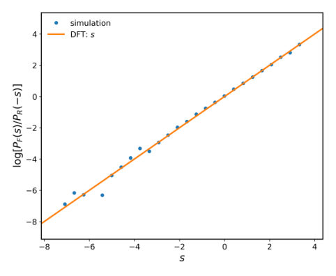
<figcaption class="paper-figure-caption"><b>Fig 1.</b> FIG. 1: Numerical verification of the endpoint-CPV detailed fluctuation theorem for the driven particle gas. The blue sym- bols show the measured value of log[PF (s)/PR(−s)], where s = ∆smd is computed from Eq. (4.10). The orange line shows the theoretical prediction log[PF (s)/PR(−s)] = s. The agreement confirms that the detailed fluctuation theorem is controlled by the endpoint CPVs, while the intermediate in- teraction and driving only affect the trajectory statistics.</figcaption>
</figure>
</div>

<p><strong>Summary.</strong> The paper introduces the Microscopic Dynamical Entropy (MDE) to quantify entropy production in finite, closed Hamiltonian systems. It extends this framework to handle time-dependent driving and variable total energy by reducing the description to observed coordinates ($x$) and instantaneous energy ($E$). The key achievement is deriving fluctuation theorems that connect macroscopic irreversibility directly to geometric properties of the unobserved phase space volume.</p>
<p><strong>Why it may be interesting.</strong> This work provides a rigorous, microscopic foundation for non-equilibrium thermodynamics directly within Hamiltonian mechanics, bypassing the need for large bath approximations common in standard stochastic treatments.</p>
<details>
<summary>Detailed structure</summary>
<p><strong>Main problem.</strong> The paper develops a microscopic framework to derive thermodynamic irreversibility (the second law) for finite, closed Hamiltonian systems by analyzing the entropy associated with coarse-graining the full phase space.</p>
<p><strong>Main result.</strong> It successfully derives detailed and integral fluctuation theorems connecting non-equilibrium work/heat exchange to changes in the conditional phase-space volume ($\Omega_Y$), confirming that irreversibility emerges from the choice of observation variables.</p>
<p><strong>Method.</strong> The core method involves defining the Microscopic Dynamical Entropy (MDE) based on partitioning degrees of freedom into observed ($x$) and unobserved ($y$) parts, allowing for extensions to time-dependent Hamiltonians and variable energy distributions.</p>
<p><strong>Model / system.</strong> The system is a finite closed Hamiltonian system $XY$, where dynamics are governed by $H_{XY}(t)$. The analysis reduces the description from $(x, y)$ to $(x, E)$, treating the unobserved variables $y$ as an effective bath whose volume $\Omega_Y(x, E)$ dictates the entropy contribution.</p>
<p><strong>Key observables.</strong> Microscopic Dynamical Entropy (MDE), Conditional Phase-Space Volume ($\Omega_Y$), Fluctuation Ratios ($P_F/P_R$), and Energy Distribution $E$.</p>
<p><strong>Important parameters / regimes.</strong> The system size (e.g., 10 or 20 degrees of freedom for numerical tests) and the time dependence of external driving forces are key parameters.</p>
<p><strong>Assumptions / limitations.</strong> The derivation relies on assuming Hamiltonian reversibility and making a non-destructive coarse-graining from $(x, y)$ to $(x, E)$.</p>
<p><strong>Figures summary.</strong> Numerical simulations confirm the detailed fluctuation theorem by showing that the ratio of forward to reverse probabilities matches the theoretical prediction derived from endpoint phase-space volumes.</p>
<p><strong>Paper structure.</strong> The paper builds conceptually by first establishing the MDE for fixed energy (Paper I), then extending it to time-dependent Hamiltonians and variable energy distributions, culminating in the derivation and numerical verification of trajectory-level fluctuation theorems.</p>
</details>
<details>
<summary>Abstract</summary>
<p>The Microscopic Dynamical Entropy (MDE) introduced in Ref. [1] describes irreversible relaxation of selected variables x within a finite closed Hamiltonian system of fixed total energy E. Here we extend the framework to arbitrary total-energy distributions and time-dependent Hamiltonians. This allows work interactions with external agents or protocols, crucial in stochastic and classical thermodynamics, and driven systems more generally, to be addressed directly. The central step is to reduce the full microscopic description in terms of selected variables x and unmonitored variables y to one in terms of the selected variables and the instantaneous total energy (x,E). The unmonitored degrees of freedom y in Y enter through their conditional phase-space volume (CPV) $Ω_Y(x,E,t)$. This construction allows work and heat to be defined directly for finite Hamiltonian composites, including cases where Y is so small that its temperature is not well defined. We demonstrate monotonic MDE growth, corresponding to the macroscopic second law, under mixing and time-scale separation even for driven systems with arbitrary energy distributions. At trajectory level, we derive detailed and integral fluctuation relations for the MDE, generalising standard large-bath results. We verify these numerically in a driven few-particle Hamiltonian system, showing the emergence of stochastic thermodynamics for collective coordinates, such as the centre-of-mass position, even in closed systems with only ten or twenty degrees of freedom. Physically, these fluctuation relations connect irreversibility to the change in the number of unmonitored microstates compatible with initial and final data for the observed coordinates. Together, our results provide a finite-system Hamiltonian foundation for the emergence of classical and stochastic thermodynamics and extend their applicability to surprisingly small heat baths.</p>
</details>
<p><sub><a href="#top">↑ back to top</a></sub></p>

<p><a id="paper-2607.07642"></a></p>
<h3 id="acoustic-phonon-driven-spin-lattice-relaxation-of-the-hbn-boron-vacancy-in-the-sub-thz-regime"><a href="http://arxiv.org/abs/2607.07642v1">Acoustic-phonon-driven spin-lattice relaxation of the hBN boron vacancy in the sub-THz regime</a></h3>
<p><strong>Authors:</strong> Priyo Adhikary, Pramey Upadhyaya<br>
<strong>Type:</strong> theory · <strong>Category:</strong> other · <strong>PDF:</strong> <a href="https://arxiv.org/pdf/2607.07642v1">https://arxiv.org/pdf/2607.07642v1</a><br>
<strong>Analysis basis:</strong> full PDF text, analyzed in chunks
<strong>Topic relevance:</strong> <code>spintronics-quantum-optics interface</code> <strong>3/5</strong> · <code>correlated / nonlocal dissipation</code> <strong>1/5</strong> · <code>exotic spin models in light-matter</code> <strong>1/5</strong> · <code>non-equilibrium dynamics</code> <strong>1/5</strong></p>
<div class="figure-strip-hint">↔ Scroll figures horizontally</div>
<div class="paper-figures-scroll">
<figure class="paper-figure-card">
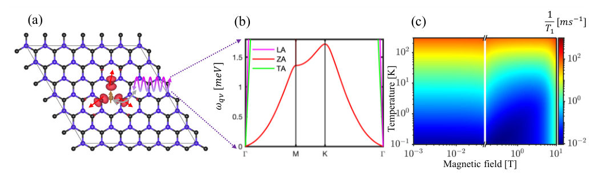
<figcaption class="paper-figure-caption"><b>Fig 1.</b> FIG. 1. Structural, vibrational, and spin relaxation overview of the VB−center in monolayer hBN. (a) Relaxed atomic structure of the VB−center in a 6 × 6 × 1 hBN supercell. Nitrogen atoms are shown in black and boron atoms in blue. The brown sphere with an arrow represents the vacancy site. The wavy line schematically depicts phonon coupled with the defect spin. The red isosurface shows the magnetization density is concentrated on the three nearest-neighbor Nitrogen atoms of the defect spin (S = 1) as visualized using VESTA [22]. (b) Low-energy acoustic phonon dispersion of the defect supercell along the high-symmetry path Γ −M −K −Γ, with the three acoustic branches color coded,...</figcaption>
</figure>
<figure class="paper-figure-card">
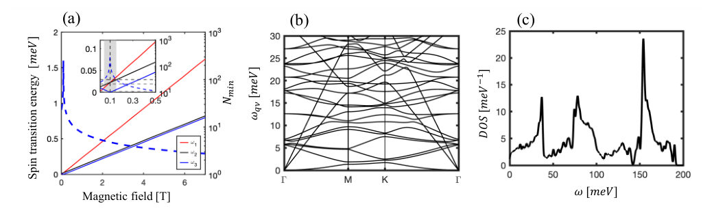
<figcaption class="paper-figure-caption"><b>Fig 2.</b> FIG. 2. (a) Magnetic field dependence of the spin transition energies ω1, ω2, and ω3 (solid lines, left axis) up to B = 7 T. The blue dashed curve (right axis) shows the estimated minimum in-plane Brillouin zone mesh size (Nmin) as the transition energy approaches zero. Horizontal gray lines indicate reference mesh sizes of 11×11, 21×21 and 31×31 used in the calculations of T1. The inset shows low-field region ( B ≤0.5 T), highlighting the ground state level anti-crossing at Bcross ≈0.1 T (vertical dashed line), indicating that direct one-phonon relaxation near Bcross requires very dense phonon sampling. The shaded region indicates the interval where the spin transition energy drops below...</figcaption>
</figure>
<figure class="paper-figure-card">
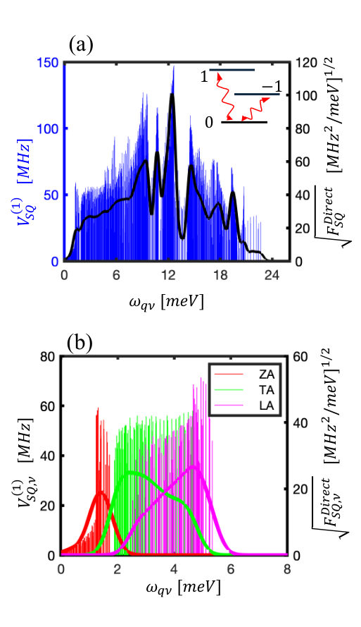
<figcaption class="paper-figure-caption"><b>Fig 3.</b> FIG. 3. First order spin-phonon coupling of the VB−center for single quantum transitions (SQ). (a) Discrete vertical lines denote spin-phonon coupling for discrete phonon frequencies, and the solid curve shows the corresponding spectral func- tion. Inset: schematic of the direct one-phonon process driv- ing the SQ transition, with the wavy line denoting the emit- ted/absorbed phonon resonant with the spin transition ener- gies. (b) V (1) SQ,ν represents the first order mode-resolved spin- phonon coupling for the three low-energy acoustic branches: ZA (red), TA (green), and LA (magenta). Vertical lines de- note the discrete coupling magnitude for the branch selected at each phonon momenta q,...</figcaption>
</figure>
<figure class="paper-figure-card">
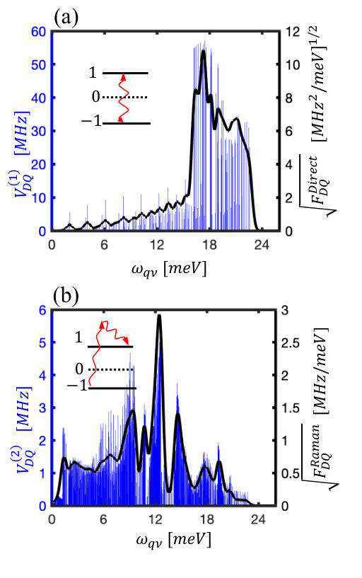
<figcaption class="paper-figure-caption"><b>Fig 4.</b> FIG. 4. Spin-phonon coupling for double quantum transition (DQ). (a) First order spin–phonon coupling, shown as discrete vertical lines, while solid curve represents the corresponding spectral function. Inset: schematic of the direct one-phonon process driving the DQ transition, with the wavy line de- noting the emitted/absorbed phonon resonant with the spin transition energy. (b) Second order spin–phonon coupling, shown as discrete vertical lines and the solid curve represent- ing the spectral function of the VB−center. Inset: schematic of the two-phonon Raman process for the DQ transition with the wavy line denoting the emitted and absorbed phonon be- tween two spin states. The SQ...</figcaption>
</figure>
<figure class="paper-figure-card">
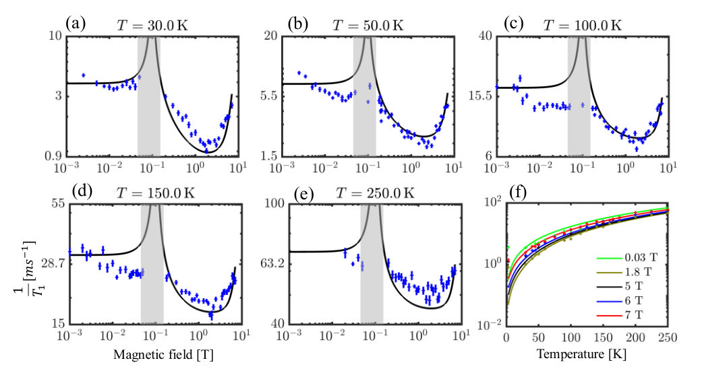
<figcaption class="paper-figure-caption"><b>Fig 5.</b> FIG. 5. Magnetic field and temperature dependence of the spin-lattice relaxation rate 1 T1 of the VB−center. (a)-(e) Field dependence of 1 T1 at T = 30, 50, 100, 150, 250 K. Experimental data are shown as blue points [12] and solid lines denote the calculated total rate. (f) Temperature dependence of 1 T1 at fixed magnetic fields B = 0.03, 1.8, 5, 6, 7 T. The shaded region highlights the field interval in which the spin transition energy falls below the DFT resolution limit.</figcaption>
</figure>
</div>

<p><strong>Summary.</strong> The paper develops an <em>ab initio</em> theory to explain spin relaxation in the $   ext{V}_{    ext{B}}^-$ defect center within hBN. By modeling the coupling between electronic spins and acoustic phonons, they identify the flexural phonon branch as the dominant source of decoherence. The resulting theoretical predictions quantitatively match experimental measurements of $T_1$ dependence on magnetic field and temperature.</p>
<p><strong>Why it may be interesting.</strong> This work provides a detailed, first-principles mechanism for decoherence in solid-state quantum defects, directly linking lattice dynamics (acoustic phonons) to qubit coherence times ($T_1$), which is crucial knowledge for designing robust quantum sensors.</p>
<details>
<summary>Detailed structure</summary>
<p><strong>Main problem.</strong> The study aims to microscopically understand the longitudinal spin-lattice relaxation time ($T_1$) of the boron vacancy ($  ext{V}_{    ext{B}}^-$) center in hexagonal boron nitride ($    ext{hBN}$) in the high magnetic field/sub-THz regime.</p>
<p><strong>Main result.</strong> The authors demonstrate that acoustic phonons, specifically the out-of-plane flexural branch (ZA), drive spin relaxation via a direct one-phonon process resonant with the Zeeman splitting. The theory successfully reproduces the measured field and temperature dependence of $T_1$ without empirical fitting.</p>
<p><strong>Method.</strong> They apply an <em>ab initio</em> acoustic mode spin-phonon relaxation theory, calculating coupling terms using DFT results and applying Fermi's golden rule to determine the spectral function for the relaxation rate.</p>
<p><strong>Model / system.</strong> The system is the negatively charged boron vacancy ($   ext{V}_{    ext{B}}^-$) in $    ext{hBN}$, modeled as an $S=1$ triplet manifold. The Hamiltonian includes Zeeman and Zero Field Splitting (ZFS) terms, coupled to lattice vibrations via spin-phonon coupling derived from DFT.</p>
<p><strong>Key observables.</strong> Longitudinal spin-lattice relaxation time ($T_1$), phonon dispersion ($\omega_{q
u}$), spectral functions for one-phonon transitions.</p>
<p><strong>Important parameters / regimes.</strong> Sub-THz regime, high magnetic fields (up to 7 T), low temperatures (30-250 K).</p>
<p><strong>Assumptions / limitations.</strong> The primary approximations include using the harmonic approximation for phonons and replacing the singular Dirac delta function in the spectral function with a Gaussian broadening kernel for numerical convergence.</p>
<p><strong>Figures summary.</strong> Figures illustrate acoustic phonon dispersions, the evolution of spin transition energies with magnetic field, and most critically, comparisons between calculated and experimental $T_1$ vs. B-field/Temperature curves.</p>
<p><strong>Paper structure.</strong> The paper establishes the physical problem (limited $T_1$), details the theoretical framework using DFT for ZFS and phonon calculations, derives the spin-phonon coupling terms, and finally calculates and compares the resulting relaxation rates against experimental data across varying fields and temperatures.</p>
</details>
<details>
<summary>Abstract</summary>
<p>The negatively charged boron vacancy center in hexagonal boron nitride is a premier candidate for quantum sensing, yet its performance is critically limited by longitudinal spin-lattice relaxation time ($T_1$). A microscopic understanding of spin relaxation in the high magnetic field regime remains elusive, as the relevant Zeeman transitions lie far below the optical phonon energies typically invoked to describe the relaxation process. Here, we apply an \textit{ab initio} acoustic mode spin-phonon relaxation theory to this problem and quantitatively reproduce the experimental magnetic field and temperature dependence of $T_1$ without empirical fitting parameters. We demonstrate that the relaxation dynamics are driven by a direct one-phonon emission and absorption process resonant with the Zeeman splitting. Furthermore, we identify the out-of-plane flexural phonon branch which is unique to two-dimensional hosts, as the primary source of decoherence, creating a distinct low-energy spectral function that facilitates spin relaxation. Our results provide a microscopic interpretation of the experimentally observed non-monotonic field and temperature dependence in two-dimensional quantum defect centers.</p>
</details>
<p><sub><a href="#top">↑ back to top</a></sub></p>

<p><a id="paper-2607.07586"></a></p>
<h3 id="fidelity-analysis-of-adiabatically-driven-donor-spins-as-two-qubit-and-ququart-systems"><a href="http://arxiv.org/abs/2607.07586v1">Fidelity Analysis of Adiabatically Driven Donor Spins as Two-Qubit and Ququart Systems</a></h3>
<p><strong>Authors:</strong> Brian Michon, James Keppens, Ashutosh Kinikar, George Simion, Kristof Moors, Bart Sorée<br>
<strong>Type:</strong> theory · <strong>Category:</strong> quantum information and computing · <strong>PDF:</strong> <a href="https://arxiv.org/pdf/2607.07586v1">https://arxiv.org/pdf/2607.07586v1</a><br>
<strong>Analysis basis:</strong> full PDF text, analyzed in chunks
<strong>Topic relevance:</strong> <code>spintronics-quantum-optics interface</code> <strong>3/5</strong> · <code>QC/QI experiment</code> <strong>2/5</strong> · <code>exotic spin models in light-matter</code> <strong>1/5</strong></p>
<div class="figure-strip-hint">↔ Scroll figures horizontally</div>
<div class="paper-figures-scroll">
<figure class="paper-figure-card">
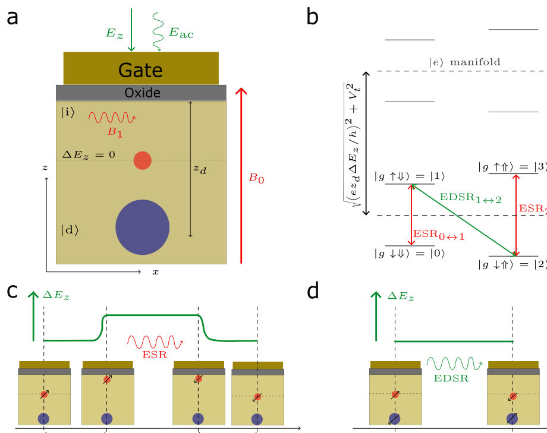
<figcaption class="paper-figure-caption"><b>Fig 1.</b> FIG. 1. Donor spin device schematic and operation. (a) Schematic visualization of the Si:P donor spin system. The excess electron is drawn in red whereas the phosphorus donor nucleus is shown in blue (not to scale). A straight red arrow indicates the Zeeman field B0. The implantation depth of the phosphorus atom is denoted by zd and dotted lines indicate the ionization point, which is the average position of the electron when ∆Ez = 0. (b) Energy level landscape for the donor spin system. Indicated in black are the computational basis states approximated by product states of the degrees of freedom and carrying the computational basis-state labels. Colored arrows indicate ESR (red) and EDSR...</figcaption>
</figure>
<figure class="paper-figure-card">
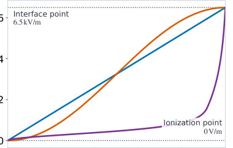
<figcaption class="paper-figure-caption"><b>Fig 2.</b> FIG. 2. (a) Detuning field profile as a function of time for all ramp types in which the total ramp duration is kept fixed at τ = 50 ns. (b) Initial state survival probability as a function of total ramp duration τ for all ramp types after averaging over all states after a round trip displacement. A frame update is applied before measurement in order to cancel accumulated phase.</figcaption>
</figure>
<figure class="paper-figure-card">
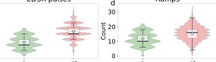
<figcaption class="paper-figure-caption"><b>Fig 3.</b> FIG. 3. Violin distributions indicating the resource counts for the C4 and C⊗2 2 gate sets. (a) Distribution for the number of required generators (width indicates relative frequency). (b) Distribution for the number of used ESR pulses. (c) Distri- bution for the number of used EDSR pulses. (d) Distribution for the number of used displacement operations.</figcaption>
</figure>
<figure class="paper-figure-card">
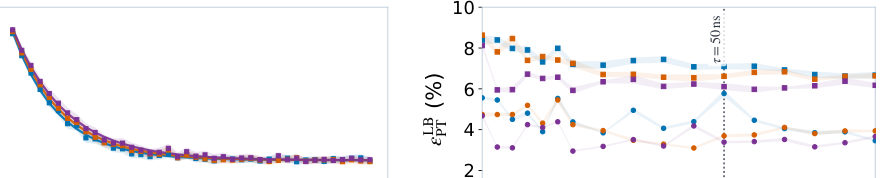
<figcaption class="paper-figure-caption"><b>Fig 4.</b> FIG. 4. Overview of RB results. Numerical metrics for leakage-aware RB are reported in Table I. All simulations use nseeds = 10, ntrials = 150, ATLF = 10 V/m, and fRTN = 10 Hz. Shaded regions denote 99% confidence intervals; dots show simulated data and solid lines the fitted decay curves. For ramped RB, the ramp duration is τ = 50 ns unless stated otherwise. (a) Leakage- aware survival probability SPT,4(m) without adiabatic ramps. (b),(c) Leakage-aware survival probabilities SPT(m) for ramped RB experiments with adiabatic ramps using (b) ququart (C4) encoding and (c) two-qubit (C⊗2 2 ) encoding. (d) Absolute lower- bound error εLB PT = 1 −(1 + 3rPT)/4 for C4 (circles) and C⊗2 2 (squares)...</figcaption>
</figure>
</div>

<p><strong>Summary.</strong> This work investigates using donor spins as qudits, comparing the performance of native ququart gate operations against those encoded from two qubits. Using leakage-aware randomized benchmarking, the authors demonstrate that the native ququart structure offers significantly lower error rates and is more resource-efficient than its qubit-encoded counterpart under realistic charge noise conditions.</p>
<p><strong>Why it may be interesting.</strong> It provides concrete evidence for utilizing higher-dimensional quantum systems (qudits) in solid-state quantum computing architectures by demonstrating superior error resilience compared to standard qubit encodings under realistic noise models.</p>
<details>
<summary>Detailed structure</summary>
<p><strong>Main problem.</strong> The study analyzes the fidelity of adiabatic driving protocols for donor spins when utilized as higher-dimensional quantum systems (qudits), comparing native ququart operation against standard encoded two-qubit operations.</p>
<p><strong>Main result.</strong> Leakage-aware randomized benchmarking shows that the native ququart ($ ext{C}_4$) consistently achieves significantly lower error rates (40–50% better) compared to the encoded two-qubit system ($ ext{C}^{\otimes 2}_2$).</p>
<p><strong>Method.</strong> The fidelity is quantified using leakage-aware Randomized Benchmarking (RB), which accounts for state leakage outside the computational basis during adiabatic driving sequences.</p>
<p><strong>Model / system.</strong> The physical platform is a Si:P donor spin system, whose native Hilbert space allows it to function as a ququart ($d=4$). The control involves implementing Clifford group gates using both Electron Dipole Spin Resonance (EDSR) and Electron Spin Resonance (ESR) pulses.</p>
<p><strong>Key observables.</strong> Average gate fidelity ($F$), lower-bound error rate ($\epsilon_{	ext{LB}}^{	ext{PT}}$), and survival probability $S(m)$ measured via leakage-aware RB.</p>
<p><strong>Important parameters / regimes.</strong> The comparison is made between the native ququart group ($  ext{C}_4$) and the encoded two-qubit group ($ ext{C}^{\otimes 2}_2$), across varying adiabatic ramp durations ($ au$).</p>
<p><strong>Assumptions / limitations.</strong> Leakage outside the computational basis is suppressed by using sufficiently long displacement ramps, and charge noise is modeled as quasistatic with rare switching events.</p>
<p><strong>Figures summary.</strong> Figures compare resource counts (pulse requirements) and show decay curves for fidelity metrics ($ ext{SPT}(m)$ vs. $  au$), demonstrating superior performance for the native ququart implementation.</p>
<p><strong>Paper structure.</strong> The paper first introduces the physical system and driving mechanisms, then details the use of leakage-aware RB to quantify gate errors, culminating in a direct comparison proving the structural advantage of using genuine qudit operations over qubit encoding.</p>
</details>
<details>
<summary>Abstract</summary>
<p>Donor spin systems host a native Hilbert space whose dimension exceeds that of a qubit, meaning they can be used as qudits. Here we study a \ce{Si{:}P} donor spin system through leakage-aware randomized benchmarking (RB) of native ququart $\mathcal{C}_4$ and encoded two-qubit $\mathcal{C}_2^{\otimes 2}$ Clifford groups. We implement adiabatic ramps to operate electron dipole spin resonance (EDSR) pulses at the ionization point, where the electron is shared halfway between the donor and the interface, and to operate electron spin resonance (ESR) pulses near the interface, motivated by the sensitivity of the effective magnetic field to charge noise at the ionization point. By placing the electron near the ionization point only during EDSR control and using sufficiently long displacement ramp durations, leakage outside the computational basis is strongly suppressed, which is crucial for optimized qudit control. We find in our analysis based on leakage RB that $\mathcal{C}_4$ consistently achieves $\sim 40$--$50\%$ lower (lower-bound) error rates $\varepsilon^{\mathrm{LB}}_\mathrm{PT}$ with respect to $\mathcal{C}_2^{\otimes 2}$, due to its reduced circuit complexity. These results indicate that donor spin qudits benefit from genuine qudit operation as opposed to imposed encoded qubit operation.</p>
</details>
<p><sub><a href="#top">↑ back to top</a></sub></p>

<p><a id="paper-2607.07031"></a></p>
<h3 id="bayesian-gill-massar-bound-an-attainable-lower-bound-for-qubit-parameter-estimation"><a href="http://arxiv.org/abs/2607.07031v1">Bayesian Gill-Massar Bound: An Attainable Lower Bound for Qubit Parameter Estimation</a></h3>
<p><strong>Authors:</strong> Ke-Han Zhao, Koichi Yamagata, Jun Suzuki<br>
<strong>Type:</strong> theory · <strong>Category:</strong> quantum information and computing · <strong>PDF:</strong> <a href="https://arxiv.org/pdf/2607.07031v1">https://arxiv.org/pdf/2607.07031v1</a><br>
<strong>Analysis basis:</strong> full PDF text, analyzed in chunks
<strong>Topic relevance:</strong> <code>quantum measurements</code> <strong>3/5</strong> · <code>entanglement &amp; information structure</code> <strong>1/5</strong> · <code>measurement-induced transitions</code> <strong>1/5</strong></p>
<div class="figure-strip-hint">↔ Scroll figures horizontally</div>
<div class="paper-figures-scroll">
<figure class="paper-figure-card">
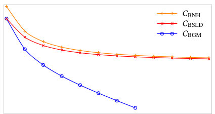
<figcaption class="paper-figure-caption"><b>Fig 1.</b> Fig. 2. Numerical results of CBNH, CBGM and CBSLD for the prior distribution in (30), and the dimension 푑= 3, . . . , 14. Values of CBGM for 푑≥11 are not shown, as the bound becomes negative and is no longer valid.</figcaption>
</figure>
<figure class="paper-figure-card">

<figcaption class="paper-figure-caption"><b>Fig 2.</b> Fig. 1. Numerical results of CBNH, CBGM and CBSLD for the prior distribution in (28), and the dimension 푑= 2, 3, . . . , 14.</figcaption>
</figure>
<figure class="paper-figure-card">
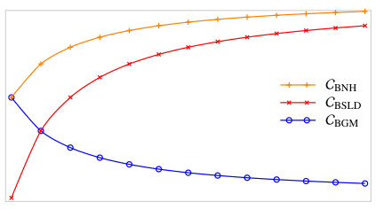
<figcaption class="paper-figure-caption"><b>Fig 3.</b> Figure 1 shows that the B-NH bound and the B-SLD-type bound increase as 푑increases, whereas the B-GM bound decreases. In particular, we have CBNH = CBGM at 푑= 2, and CBGM = CBSLD at 푑= 3. The coincidence of the B-SLD- type and B-GM bounds arises from the symmetry of the prior, which can be verified by modifying the prior. Additionally, the curve of the B-NH bound is always tighter than that of the B- SLD-type bound, which is consistent with Ref. [11]. Finally, CBGM ≤CBSLD for 푑≥4, indicating a limitation of the B-GM bound in higher-dimensional settings.</figcaption>
</figure>
</div>

<p><strong>Summary.</strong> This paper introduces the Bayesian Gill-Massar (B-GM) bound, a new theoretical lower limit for estimating parameters in quantum systems. The authors prove this bound is attainable specifically for qubits by identifying the optimal measurement strategy as a simple projection-valued measure. This advances the field by providing an explicit solution to determining achievable bounds in quantum estimation theory.</p>
<p><strong>Why it may be interesting.</strong> It provides a concrete, analytically derived lower bound that is proven to be achievable in the fundamental qubit regime, solving an open problem in quantum metrology theory.</p>
<details>
<summary>Detailed structure</summary>
<p><strong>Main problem.</strong> The central problem is establishing computable, attainable lower bounds for the Bayes risk in Bayesian quantum parameter estimation.</p>
<p><strong>Main result.</strong> The authors introduce the novel Bayesian Gill-Massar (B-GM) bound, proving it is attainable for any qubit model and providing an explicit construction for the optimal measurement strategy.</p>
<p><strong>Method.</strong> The derivation extends classical point estimation bounds to the quantum setting using extended Fisher information matrices and deriving a specific inequality (Bayesian Gill-Massar inequality).</p>
<p><strong>Model / system.</strong> The analysis focuses on general qubit models, though it is applied to specific two-parameter Pauli models for numerical comparison.</p>
<p><strong>Key observables.</strong> Bayes risk ($R[\hat{\Pi}]$), the B-GM bound ($    ext{CBGM}$), and the Fisher Information Matrix ($K$).</p>
<p><strong>Important parameters / regimes.</strong> The dimension of the Hilbert space ($   ext{dim}(H)$) and the number of parameters being estimated.</p>
<p><strong>Assumptions / limitations.</strong> The primary assumption is the applicability of extending classical bounding techniques to the quantum domain; a noted limitation is that the B-GM bound can become negative or worse than other bounds in high dimensions.</p>
<p><strong>Figures summary.</strong> Numerical comparisons are provided showing how the B-GM, B-NH, and B-SLD-type bounds relate across different model dimensions, highlighting where equality holds and where limitations appear.</p>
<p><strong>Paper structure.</strong> The paper reviews existing quantum estimation bounds (B-SLD, B-NH), introduces the B-GM bound via an extended parameter space approach, derives its attainability for qubits, and concludes with numerical comparisons and a discussion of high-dimensional limitations.</p>
</details>
<details>
<summary>Abstract</summary>
<p>We study lower bounds for Bayesian quantum parameter estimation, with a particular focus on qubit models. While several lower bounds on the Bayes risk have been proposed, including the Bayesian symmetric logarithmic derivative (B-SLD) type bound and the Bayesian Nagaoka-Hayashi (B-NH) bound, there is no definite proof available to show they are attainable except for special cases. Thus, identifying attainable bounds together with their corresponding optimal measurement strategies remains a central open problem in Bayesian quantum estimation. In this work, we introduce a new Bayesian lower bound, referred to as the Bayesian Gill-Massar (B-GM) bound, inspired by the logic of Gill-Massar bound in point estimation. We derive an analytical closed-form expression of the bound and show that it is attainable for any qubit model. In particular, we prove that the optimal Bayesian strategy can be realized by a projection-valued measure associated with a single effective direction determined by the weight matrix and the B-SLD-type Fisher information matrix. We provide numerical comparisons between the B-GM, B-NH, and B-SLD-type bounds in higher-dimensional models. Our results show that the B-GM bound has a limitation in high-dimensional models with few parameters, since it can be negative.</p>
</details>
<p><sub><a href="#top">↑ back to top</a></sub></p>

<p><a id="paper-2607.06938"></a></p>
<h3 id="first-constraint-on-born-rule-violations-at-high-energy-colliders"><a href="http://arxiv.org/abs/2607.06938v1">First constraint on Born-rule violations at high-energy colliders</a></h3>
<p><strong>Authors:</strong> Antony Valentini, Mira Varma<br>
<strong>Type:</strong> experiment · <strong>Category:</strong> other · <strong>PDF:</strong> <a href="https://arxiv.org/pdf/2607.06938v1">https://arxiv.org/pdf/2607.06938v1</a><br>
<strong>Analysis basis:</strong> full PDF text, analyzed in chunks
<strong>Topic relevance:</strong> <code>quantum measurements</code> <strong>3/5</strong> · <code>measurement-induced transitions</code> <strong>1/5</strong></p>
<div class="figure-strip-hint">↔ Scroll figures horizontally</div>
<div class="paper-figures-scroll">
<figure class="paper-figure-card">
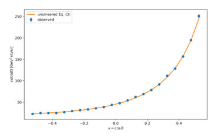
<figcaption class="paper-figure-caption"><b>Fig 1.</b> FIG. 1. HRS Bhabha scattering data with O(α3) effects re- moved (Table XII of Ref. [5]) compared with the standard (unsmeared) O(α2) Born-rule prediction (3).</figcaption>
</figure>
<figure class="paper-figure-card">
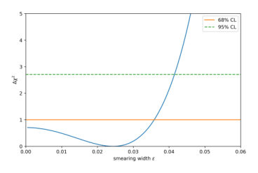
<figcaption class="paper-figure-caption"><b>Fig 2.</b> FIG. 2. ∆χ2 scan for the smeared expression (4) (with a = 0.4). The best fit occurs at ε = 0.024. The full orange and dashed green lines respectively represent the one-sided 68% and 95% confidence limits.</figcaption>
</figure>
<figure class="paper-figure-card">
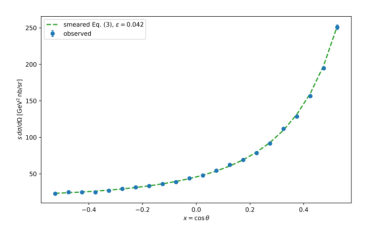
<figcaption class="paper-figure-caption"><b>Fig 3.</b> FIG. 3. HRS Bhabha scattering data with O(α3) effects removed (Table XII of Ref. [5]) compared with the O(α2) smeared prediction (4) at the 95% confidence limit with ε = 0.042.</figcaption>
</figure>
</div>

<p><strong>Summary.</strong> This paper derives an experimental constraint on potential violations of the Born rule by analyzing Bhabha scattering data from the PEP collider. The authors model deviations as an angular smearing parameter ($\epsilon$) and use statistical fitting techniques to set an upper bound of $\epsilon < 0.042$. This provides a rigorous, model-independent test of quantum mechanics at high energies.</p>
<p><strong>Why it may be interesting.</strong> While not directly focused on AMO systems, this work tests fundamental principles of quantum mechanics (the Born rule) using high-energy particle collision data, which is a core area of theoretical physics relevant to understanding measurement processes.</p>
<details>
<summary>Detailed structure</summary>
<p><strong>Main problem.</strong> The primary goal is to experimentally constrain potential violations of the Born rule, a fundamental postulate of quantum mechanics, using high-energy collider data.</p>
<p><strong>Main result.</strong> The analysis sets an upper bound on the smearing parameter ($\epsilon$) due to Born-rule violations at $\epsilon < 0.042$ at 95% confidence level.</p>
<p><strong>Method.</strong> The authors model potential violations as a Gaussian angular smearing of the differential scattering cross section for Bhabha scattering, fitting this smeared prediction against existing experimental data.</p>
<p><strong>Model / system.</strong> The study focuses on large-angle Bhabha ($e^+e^- 	o e^+e^-$) scattering at $\sqrt{s}=29$ GeV, using data from the PEP collider. The deviation is parameterized by a smearing width $\epsilon$.</p>
<p><strong>Key observables.</strong> Differential scattering cross section ($rac{d\sigma}{d\Omega}$) as a function of $x = \cos	heta$.</p>
<p><strong>Important parameters / regimes.</strong> The upper bound on the smearing parameter, $\epsilon < 0.042$; the center-of-mass energy $\sqrt{s}=29$ GeV; and the intrinsic experimental bin width $\Delta x = 0.05$.</p>
<p><strong>Assumptions / limitations.</strong> The constraint is model-independent, assuming that any deviation from the Born rule manifests as an angular smearing described by a Gaussian function.</p>
<p><strong>Figures summary.</strong> Figure 1 compares measured Bhabha scattering data against the standard QED prediction. Figure 2 shows the $\Delta\chi^2$ scan used to determine confidence limits on the smearing parameter $\epsilon$.</p>
<p><strong>Paper structure.</strong> The paper introduces the theoretical motivation for testing the Born rule, details the phenomenological method using Gaussian smearing applied to Bhabha scattering cross sections, presents the statistical fitting procedure (likelihood/chi-squared minimization), and concludes with the derived upper bound on $\epsilon$.</p>
</details>
<details>
<summary>Abstract</summary>
<p>We obtain an experimental constraint on possible Born-rule violations at high-energy colliders. We model Born-rule violations with differential scattering cross sections $dσ/dΩ$ subject to an angular smearing by a narrow Gaussian of width $\varepsilon$ (with respect to $x=\cosθ$ for scattering angle $θ$). For large-angle Bhabha ($e^{+}e^{-} \rightarrow e^{+}e^{-}$) scattering, at a centre-of-mass energy $\sqrt{s}=29\, \mathrm{GeV}$, data from the PEP collider at SLAC allow us to set an upper bound of $\varepsilon<0.042$ at $95\%$ confidence. This corresponds to a Gaussian smearing over an angular range of twice the experimental bin width, and hence provides a physically meaningful limit on deviations from the Born rule. Future prospects for improving this limit are discussed.</p>
</details>
<p><sub><a href="#top">↑ back to top</a></sub></p>

<p><a id="paper-2607.07315"></a></p>
<h3 id="thermodynamic-description-of-worldwide-distribution-of-energy-and-carbon-emission"><a href="http://arxiv.org/abs/2607.07315v1">Thermodynamic description of worldwide distribution of energy and carbon emission</a></h3>
<p><strong>Authors:</strong> Klaus M. Frahm, Dima L. Shepelyansky<br>
<strong>Type:</strong> theory · <strong>Category:</strong> statistical mechanics · <strong>PDF:</strong> <a href="https://arxiv.org/pdf/2607.07315v1">https://arxiv.org/pdf/2607.07315v1</a><br>
<strong>Analysis basis:</strong> full PDF text, analyzed in chunks
<strong>Topic relevance:</strong> <code>non-equilibrium dynamics</code> <strong>2/5</strong> · <code>non-equilibrium universality</code> <strong>2/5</strong> · <code>Keldysh / 2PI / non-Gaussian methods</code> <strong>1/5</strong> · <code>analog quantum simulation</code> <strong>1/5</strong> · <code>correlated / nonlocal dissipation</code> <strong>1/5</strong> · <code>driven-dissipative phase transition</code> <strong>1/5</strong> · <code>methods for driven-dissipative</code> <strong>1/5</strong></p>
<div class="figure-strip-hint">↔ Scroll figures horizontally</div>
<div class="paper-figures-scroll">
<figure class="paper-figure-card">
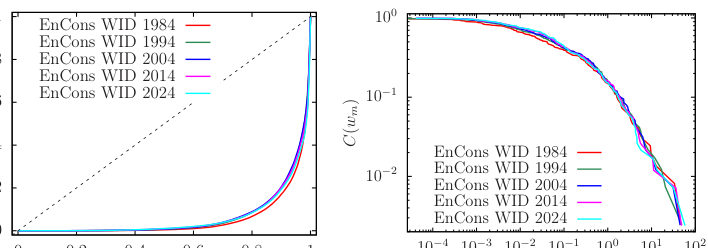
<figcaption class="paper-figure-caption"><b>Fig 1.</b> Figure 1: Left: Lorenz curves of energy consumption of countries from WID data [4–6] for 5 years from 1984 to 2024. The x-axis corresponds to the cumulated fraction of households/countries (h) and the y-axis to the cumulated fraction of wealth/energy consumption (w). The dashed black line corresponds to the line of perfect equipartition w = h. The Gini coefficients for the years 1984 to 2024 are G = 0.894, 0.876, 0.872, 0.875, 0.879. Right: Pareto curves C(wm) for the same data where C(wm) represents the fraction of countries with an energy consumption larger than wm (analogous to wealth). The x-axis corresponds to rescaled values wm/⟨wm⟩where ⟨wm⟩= ws is the average energy consumption for...</figcaption>
</figure>
<figure class="paper-figure-card">
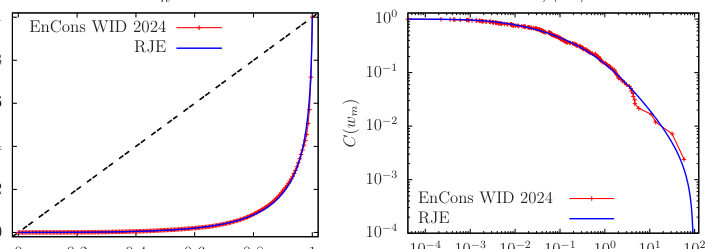
<figcaption class="paper-figure-caption"><b>Fig 2.</b> Figure 2: Lorenz curves (left panels) and Pareto curves (right panels) for the country energy consumption of the years 1994 (top) and 2024 (bottom) in the same style as in Fig. 1. Red data points correspond to the WID data [4–6] for 204 (209) countries for 1994 (2024) and blue curves correspond to the theoretical RJE curves obtained by matching Gini coefficients to determine ε and an optimal Lorenz curve fit to determine the parameter a. The parameters for 1994 are G = 0.875, ε = ⟨wm⟩RJE = 0.0166, a = 3.44 and ⟨wm⟩1994−data = 484 TWh. The parameters for 2024 are G = 0.879, ε = ⟨wm⟩RJE = 0.0105, a = 4.23 and ⟨wm⟩2024−data = 841 TWh.</figcaption>
</figure>
<figure class="paper-figure-card">

<figcaption class="paper-figure-caption"><b>Fig 3.</b> Figure 3: Left: World map of effective RJE energy consumption values w(RJE) m for 209 countries computed from the blue RJE Lorenz curve (in left bottom panel) of Fig. 2 at a = 4.23, ε = 0.0105 corresponding to the best RJE fit of real 2024 WID energy consumption data [6] (see text and Fig. 13 of [11] for details). The color values shown in the color bar correspond to the ratio w(RJE) m /w(RJE) max where the maximal value corresponds to China. The blue color for the minimal value has been attributed to 10−5 for an optimal visibility and only a few very small countries have values in the interval [10−6, 10−5] which are also shown as blue. Right: Logarithmic (or relative) difference ∆=...</figcaption>
</figure>
<figure class="paper-figure-card">

<figcaption class="paper-figure-caption"><b>Fig 4.</b> Figure 4: As Fig. 2 but for the cases of annual CO2 emission in 1984 (top, 200 countries) and 2024 (bottom, 213 countries) using WID data [4–6]. The RJE fit parameters for 1984 (2024) are G = 0.878 (G = 0.893), ε = ⟨wm⟩RJE = 0.0128 (ε = ⟨wm⟩RJE = 0.00672) and a = 3.88 (a = 4.76). The real data country CO2 emission averages are ⟨wm⟩1984−data = 9.55 × 107 tons and ⟨wm⟩2024−data = 1.76 × 108 tons.</figcaption>
</figure>
</div>

<p><strong>Summary.</strong> This paper applies advanced concepts from statistical mechanics, specifically Rayleigh-Jeans thermalization, to model the global distribution of energy and carbon emissions. It finds that these distributions exhibit persistent, high levels of inequality, which are accurately described by a universal thermodynamic hypothesis. This suggests that macro-scale resource allocation follows fundamental physical laws governing energy condensation.</p>
<p><strong>Why it may be interesting.</strong> While applied to macro-economics, the core methodology—mapping complex societal inequalities onto established physical concepts like thermalization and condensation—is a powerful analogy that touches upon non-equilibrium statistical mechanics principles relevant to open quantum systems or energy dissipation models.</p>
<details>
<summary>Detailed structure</summary>
<p><strong>Main problem.</strong> The paper analyzes the worldwide distribution of energy and carbon emission across countries over decades to determine the underlying physical principles governing global inequality.</p>
<p><strong>Main result.</strong> The Energy Thermalization Hypothesis (ENTH), based on Rayleigh-Jeans (RJ) thermalization, provides an excellent description for the observed Lorenz and Pareto curves for energy and carbon emissions. This suggests that global resource distribution follows universal thermodynamic laws characterized by strong inequality.</p>
<p><strong>Method.</strong> The authors use statistical mechanics concepts, specifically applying RJ thermal distributions to model socio-economic data like energy consumption and $   ext{CO}_2$ emissions.</p>
<p><strong>Model / system.</strong> The system models world countries as interacting agents whose energy/carbon distribution is governed by principles analogous to thermalization (RJ condensation). The analysis compares theoretical predictions derived from the RJE model against real World Input-Output Database (WID) data.</p>
<p><strong>Key observables.</strong> Lorenz curves, Pareto distributions, Gini coefficient ($G$), and relative differences ($\Delta$) between modeled and observed energy/carbon emissions.</p>
<p><strong>Important parameters / regimes.</strong> The Gini coefficients are consistently high ($G \approx 0.87-0.90$), indicating strong inequality; the RJE model parameters include $a$ and $\varepsilon$.</p>
<p><strong>Assumptions / limitations.</strong> It is assumed that only collective interactions at the country level affect global energy distribution, and the analysis relies on public datasets for energy/carbon emissions.</p>
<p><strong>Figures summary.</strong> Figures show Lorenz and Pareto curves for energy/$ ext{CO}_2$ over 40-50 years demonstrating stable Gini coefficients. World maps compare model predictions ($w(	ext{RJE})_m$) to real data, highlighting relative differences ($\Delta$).</p>
<p><strong>Paper structure.</strong> The paper introduces the problem by analyzing historical energy/carbon distributions using Lorenz/Pareto curves. It then proposes and tests the ENTH based on RJ thermalization, showing agreement with empirical data for multiple resources over decades.</p>
</details>
<details>
<summary>Abstract</summary>
<p>Based on public data, we analyze the distributions of energy and carbon emission over world countries on a scale of the last 40-50 years using their presentation via Lorenz and Pareto curves. These curves in rescaled format remain remarkably stable on this time period being characterized by high values of the Gini coefficient indicating a strong inequality of energy distribution. To explain these distributions, we introduce the ENergy Thermalization Hypothesis (ENTH) according to which these distributions result from the Rayleigh-Jeans (RJ) thermalization and condensation of agents representing different countries. We show that this hypothesis provides an excellent description of Lorenz and Pareto curves obtained from data on the above time period. It also gives natural grounds for inequality relating it to the RJ condensation at low energy states. We additionally trace parallels with the wealth inequality in the world.</p>
</details>
<p><sub><a href="#top">↑ back to top</a></sub></p>

<p><a id="paper-2607.07121"></a></p>
<h3 id="reconnection-diagnostics-for-vortex-tangles-in-bose-condensed-and-superfluid-dark-matter-halos"><a href="http://arxiv.org/abs/2607.07121v1">Reconnection diagnostics for vortex tangles in Bose-condensed and superfluid dark matter halos</a></h3>
<p><strong>Authors:</strong> Kazım Yavuz Ekşi<br>
<strong>Type:</strong> theory · <strong>Category:</strong> quantum gases · <strong>PDF:</strong> <a href="https://arxiv.org/pdf/2607.07121v1">https://arxiv.org/pdf/2607.07121v1</a><br>
<strong>Analysis basis:</strong> full PDF text, analyzed in chunks
<strong>Topic relevance:</strong> <code>non-equilibrium dynamics</code> <strong>2/5</strong> · <code>Keldysh / 2PI / non-Gaussian methods</code> <strong>1/5</strong> · <code>analog quantum simulation</code> <strong>1/5</strong> · <code>correlated / nonlocal dissipation</code> <strong>1/5</strong> · <code>driven-dissipative phase transition</code> <strong>1/5</strong> · <code>methods for driven-dissipative</code> <strong>1/5</strong> · <code>non-equilibrium universality</code> <strong>1/5</strong></p>
<div class="figure-strip-hint">↔ Scroll figures horizontally</div>
<div class="paper-figures-scroll">
<figure class="paper-figure-card">

<figcaption class="paper-figure-caption"><b>Fig 1.</b> Figure 1. Halo-scale orientation used in the calculation. We take 𝑟soliton = 3.5𝑟c for the core size and 𝑑peak = 7.5𝑟c for the spectral peak scale in Mocz et al. The vortex-line density is not measured by this figure; throughout the calculation we write L = 𝜂vLM with LM = 𝑑−2 peak.</figcaption>
</figure>
<figure class="paper-figure-card">

<figcaption class="paper-figure-caption"><b>Fig 2.</b> Figure 2. Fixed-radius semi-analytical scan for 𝐶rec = 1, 𝑟c = 1 kpc, and the Mocz-scale upper-bound proxy 𝜂v = 1. The color shows log10 𝜒, where 𝜒= 𝑡dyn/𝑡rec. The white and black contours mark 𝜒= 0.1 and 𝜒= 1. The dashed red curve shows the non-interacting soliton relation of Eq. (27) at 𝑟c = 1 kpc; it tracks the white contour because the soliton relation gives 𝜒≃0.10 for 𝜂v = 1. For smaller line densities, Δ log10 𝜒= (5/2) log10 𝜂v &lt; 0, so the contours move toward smaller 𝜒; the values in Table 1 should be rescaled in the same way.</figcaption>
</figure>
<figure class="paper-figure-card">

<figcaption class="paper-figure-caption"><b>Fig 3.</b> Figure 2 shows log10 𝜒in the (𝑚, 𝜌c) plane for𝐶rec = 1 and 𝜂v = 1. The white curve marks 𝜒= 0.1 and the black curve marks 𝜒= 1. The dashed red curve marks the non-interacting soliton relation evaluated at 𝑟c = 1 kpc. Its near-overlap with the white contour is expected: imposing the soliton relation cancels the explicit 𝑚and 𝜌c dependence of 𝜒and gives the Mocz-normalized value 𝜒≃0.10. For the fixed-radius scan at 𝜂v = 1 we find 1.4 × 10−4 ≲𝜒≲ 4.4 × 101. The threshold 𝜒= 1 occurs near 𝑚≃4 × 10−23 eV at 𝜌c = 106𝑀⊙kpc−3, but near 𝑚≃4×10−24 eV at 𝜌c = 108𝑀⊙kpc−3. The displayed contours shift as 𝐶rec𝜂5/2 v . The fixed-radius energetic diagnostics sharpen the interpretation. Across the same scan,...</figcaption>
</figure>
<figure class="paper-figure-card">

<figcaption class="paper-figure-caption"><b>Fig 4.</b> Figure 3. Dependence of the soliton-branch diagnostics on the unknown line-density normalization 𝜂v = L/LM. The curves in the panel correspond to the soliton branch evaluated at 𝐶rec = 1. The shaded band marks the Feynman normalization 𝜂F v ≃0.25 −0.84 for 𝜂Ω = 0.03 −0.1. A smaller true vortex-line density rapidly suppresses the reconnection count and virial- impact diagnostic while increasing the reservoir depletion time.</figcaption>
</figure>
</div>

<p><strong>Summary.</strong> This paper analyzes how quantized vortex reconnections within superfluid dark matter halos can dissipate kinetic energy into various waves. By comparing the reconnection timescale to the halo's dynamical time using diagnostic ratios, the authors determine that this process is only dynamically important when the core is externally perturbed, not in relaxed equilibrium states.</p>
<p><strong>Why it may be interesting.</strong> This work bridges concepts from superfluid dynamics (vortex physics, GPE) with astrophysics (dark matter halos), providing a quantitative framework for energy dissipation in quantum many-body systems far from equilibrium.</p>
<details>
<summary>Detailed structure</summary>
<p><strong>Main problem.</strong> The study investigates the dynamical and energetic importance of vortex reconnections occurring within Bose-Einstein-condensed (BEC) and superfluid dark matter (SFDM) halos.</p>
<p><strong>Main result.</strong> Reconnection heating is only dynamically significant if the halo core is perturbed by mergers or tides, as relaxed cores show negligible energy release. The released energy remains in the dark sector, requiring additional physics for visible signals.</p>
<p><strong>Method.</strong> The authors combine a local reconnection law (derived from GPE theory) with a halo-scale vortex-line density calibrated against prior Schrödinger-Poisson simulations to calculate diagnostic ratios.</p>
<p><strong>Model / system.</strong> The system models dark matter halos as coherent bosonic media supporting quantized vortices, governed by principles related to the Gross-Pitaevskii equation. The dynamics are analyzed using concepts of vortex reconnection and energy dissipation into phonons/waves.</p>
<p><strong>Key observables.</strong> Diagnostic parameters include $\chi = t_{	ext{dyn}}/t_{	ext{rec}}$, $t_{	ext{diss}}$ (dissipation time), and $\Pi_{	ext{rec}}$ (virial impact parameter).</p>
<p><strong>Important parameters / regimes.</strong> Circulation quantum ($\kappa$), vortex-line density ($L$), dynamical time ($t_{	ext{dyn}}$), and core virial energy ($u_{	ext{vir}}$).</p>
<p><strong>Assumptions / limitations.</strong> The analysis relies on a local reconnection law and uses Mocz et al. (2017) results as an upper-bound proxy for the unknown vortex line density ($\eta_v$).</p>
<p><strong>Paper structure.</strong> The paper establishes the physical context of vortices in SFDM halos, derives local reconnection scaling laws, applies these laws to a halo-scale model using calibrated densities, and finally calculates diagnostic ratios ($\chi, t_{	ext{diss}}, \Pi_{	ext{rec}}$) to determine if reconnection heating is dynamically relevant.</p>
</details>
<details>
<summary>Abstract</summary>
<p>Bose-Einstein-condensed (BEC) and superfluid dark-matter (SFDM) halos can contain coherent, wave-supported cores whose angular momentum is carried by quantized vortices. When vortices form a tangle, reconnections convert part of the vortex kinetic energy into dark phonons, density waves, Kelvin waves, and vortex loops, providing a microscopic channel by which SFDM vortex structure can affect halo-core evolution. We estimate the dynamical importance of this channel by combining the local Gross-Pitaevskii reconnection law with a halo-scale vortex-line density calibrated against Schrödinger-Poisson simulations. In the minimal model the released energy stays in the dark sector, and standard-model luminosity requires additional portal physics.</p>
</details>
<p><sub><a href="#top">↑ back to top</a></sub></p>

<p><a id="paper-2607.06669"></a></p>
<h3 id="monodromy-defects-in-chern-simons-theory-and-holography"><a href="http://arxiv.org/abs/2607.06669v1">Monodromy defects in Chern-Simons theory and Holography</a></h3>
<p><strong>Authors:</strong> Federico Ambrosino, Jaume Gomis, Suriyah Rajalingam Kannagi<br>
<strong>Type:</strong> theory · <strong>Category:</strong> strongly correlated electrons · <strong>PDF:</strong> <a href="https://arxiv.org/pdf/2607.06669v1">https://arxiv.org/pdf/2607.06669v1</a><br>
<strong>Analysis basis:</strong> full PDF text, analyzed in chunks
<strong>Topic relevance:</strong> <code>entanglement &amp; information structure</code> <strong>2/5</strong> · <code>Keldysh / 2PI / non-Gaussian methods</code> <strong>1/5</strong> · <code>analog quantum simulation</code> <strong>1/5</strong> · <code>correlated / nonlocal dissipation</code> <strong>1/5</strong> · <code>driven-dissipative phase transition</code> <strong>1/5</strong> · <code>methods for driven-dissipative</code> <strong>1/5</strong></p>
<div class="figure-strip-hint">↔ Scroll figures horizontally</div>
<div class="paper-figures-scroll">
<figure class="paper-figure-card">

<figcaption class="paper-figure-caption"><b>Fig 1.</b> Figure 1: A g-monodromy defect Ma imposing g-twisted boundary conditions. z is a complex coordinate in the plane transverse to the codimension-two defect. The wavy line is a branch cut implementing the action of g.</figcaption>
</figure>
<figure class="paper-figure-card">

<figcaption class="paper-figure-caption"><b>Fig 2.</b> Figure 3: Monodromy defect supported on a knot that is the boundary of a topological surface.</figcaption>
</figure>
<figure class="paper-figure-card">

<figcaption class="paper-figure-caption"><b>Fig 3.</b> Figure 5: Topological defect implementing the action of charge conjugation on a Wilson line.</figcaption>
</figure>
<figure class="paper-figure-card">

<figcaption class="paper-figure-caption"><b>Fig 4.</b> Figure 7: Geometric transition for the ΩσSO/Sp + orientifold. On the deformed conifold side, the orientifold plane O∓intersects the stack of N Lagrangian branes along S1 ⊂S3. After the transition, the branes are replaced by flux, and the resolved conifold contains an orientifold plane O∓at the fixed locus of σ+, shown as the dashed red line.</figcaption>
</figure>
<figure class="paper-figure-card">

<figcaption class="paper-figure-caption"><b>Fig 5.</b> Figure 8: ΩσSO + ⊕B orientifold of resolved conifold: there is a brane stuck at the midpoint of the internal edge, on top of the O-plane (red dashed line).</figcaption>
</figure>
</div>

<p><strong>Summary.</strong> This work extends the observable set in Chern-Simons theory by introducing monodromy defects, which are labeled by twisted affine algebras. These new defects provide a rigorous test of the theory's holographic dual, showing that they map onto specific orientifold backgrounds in topological string theory.</p>
<p><strong>Why it may be interesting.</strong> While focused on high-energy QFT/String Theory, the study of topological order, defect operators, and symmetry protection (like $\mathbb{Z}_2$ grading) provides deep mathematical structures relevant to understanding fractionalization and exotic phases in strongly correlated electron systems.</p>
<details>
<summary>Detailed structure</summary>
<p><strong>Main problem.</strong> To determine if Wilson loop operators are the only observables in Chern-Simons theory, and to find their holographic dual description by introducing new codimension-two monodromy defects.</p>
<p><strong>Main result.</strong> The spectrum of line defects realizes every algebra in Kac's classification; furthermore, the insertion of a monodromy defect transforms the dual string background from an oriented to an unoriented orientifold.</p>
<p><strong>Method.</strong> Algebraic and geometric characterization of new observables (monodromy defects) and comparison of correlation functions between Chern-Simons theory and its proposed topological string/holographic duals.</p>
<p><strong>Model / system.</strong> Chern-Simons theory with gauge group G at level k, particularly focusing on theories possessing charge conjugation symmetry. The holographic dual is a topological string theory living on resolved conifold geometries.</p>
<p><strong>Key observables.</strong> Wilson loop operators ($   ext{WR}(K)$) and new codimension-two monodromy defects ($\mathcal{M}_a$), whose correlation functions are calculated using modular $S$-matrices.</p>
<p><strong>Important parameters / regimes.</strong> Gauge group G, level k, the $\mathbb{Z}_2$ symmetry related to charge conjugation, and string coupling constants ($g_s$).</p>
<p><strong>Assumptions / limitations.</strong> The validity of the holographic duality (Gopakumar–Vafa correspondence) and the ability to extend observables beyond standard Wilson loops.</p>
<p><strong>Figures summary.</strong> Figure 1 illustrates a g-monodromy defect imposing g-twisted boundary conditions, while other figures illustrate orientifold projections ($\Omega_{\sigma\pm}$) on conifolds.</p>
<p><strong>Paper structure.</strong> The paper establishes the algebraic framework for monodromy defects, calculates their correlation functions relative to Wilson loops, and then applies these findings to test and refine the holographic duality by identifying the corresponding brane content in the dual string theory background.</p>
</details>
<details>
<summary>Abstract</summary>
<p>Wilson loop operators in Chern-Simons theory have revealed profound links between quantum field theory, the fractional quantum Hall effect, topology, conformal field theory, and string theory. In Chern-Simons theories with charge conjugation symmetry, we construct a new class of observables: codimension-two monodromy defects around which fields return to themselves up to charge conjugation. Whereas Wilson loops are labeled by integrable representations of an untwisted affine Lie algebra, monodromy defects are labeled by those of the corresponding twisted affine algebra. The modular and fusion data of these two algebras determine the exact correlation functions of Wilson lines and monodromy defects, which together furnish a $\mathbb{Z}_2$-crossed braided tensor category. The spectrum of line defects in Chern-Simons theory thus gives a physical realization of every algebra in Kac's classification of affine Lie algebras: untwisted for Wilson loops, twisted for monodromy defects. We also determine the exact 't Hooft expansion of monodromy defects in $SU(N)_k$ Chern-Simons theory and identify their holographic duals in topological string theory. The insertion of the lightest monodromy defect has a striking effect: it replaces the resolved conifold background of the Gopakumar-Vafa duality by a specific orientifold of the resolved conifold, transmuting the dual theory of oriented strings into one of unoriented strings. Each excited monodromy defect is then realized as a collection of branes in the orientifold background, with the brane content determined by the representation of the twisted affine algebra that labels the defect.</p>
</details>
<p><sub><a href="#top">↑ back to top</a></sub></p>

<p><a id="paper-2607.07539"></a></p>
<h3 id="a-dynamic-multiplexing-policy-for-a-quantum-repeater"><a href="http://arxiv.org/abs/2607.07539v1">A Dynamic Multiplexing Policy for a Quantum Repeater</a></h3>
<p><strong>Authors:</strong> Jeroen Grimbergen, Sounak Kar, Michal van Hooft, Conor Bradley, Stephanie Wehner<br>
<strong>Type:</strong> theory · <strong>Category:</strong> quantum information and computing · <strong>PDF:</strong> <a href="https://arxiv.org/pdf/2607.07539v1">https://arxiv.org/pdf/2607.07539v1</a><br>
<strong>Analysis basis:</strong> full PDF text, analyzed in chunks
<strong>Topic relevance:</strong> <code>non-equilibrium dynamics</code> <strong>2/5</strong> · <code>correlated / nonlocal dissipation</code> <strong>1/5</strong> · <code>driven-dissipative phase transition</code> <strong>1/5</strong> · <code>entanglement &amp; information structure</code> <strong>1/5</strong> · <code>methods for driven-dissipative</code> <strong>1/5</strong></p>
<div class="figure-strip-hint">↔ Scroll figures horizontally</div>
<div class="paper-figures-scroll">
<figure class="paper-figure-card">

<figcaption class="paper-figure-caption"><b>Fig 1.</b> FIG. 1 Overview of many-quantum-chip repeater connecting two end nodes. a) A many-quantum-chip repeater node connecting two end nodes. Quantum chips are depicted as rectangles with communication qubit (purple, left) and memory qubit (green, right). Quantum chips on the end nodes are not shown. A reconfigurable router can connect the quantum chips on the repeater node to remote entanglement generation interfaces between the repeater and either of the end nodes for which a single entanglement generation attempt has success probability p. It can also connect two chips on the repeater to a local entanglement generation interface where each attempt succeeds with probability plocal. The local...</figcaption>
</figure>
<figure class="paper-figure-card">

<figcaption class="paper-figure-caption"><b>Fig 2.</b> FIG. 2 Switching layouts for optical routers for a) FxdMux and b) DynMux. Inputs of the router are at the bottom and outputs at the top. Outputs labeled L and R connect to left and right end nodes, respectively, and outputs B1 and B2 connect to the two arms of the lo- cal entanglement generation interface. Optical switches are represented by the blue rectangles. Unit cells indi- cated by the dashed rectangles fan out into a binary tree. At each stage, the center two outputs of a unit cell are connected to the two left most or two right most inputs of the unit cell in the stage above it. See also Assumption A7.</figcaption>
</figure>
<figure class="paper-figure-card">

<figcaption class="paper-figure-caption"><b>Fig 3.</b> FIG. 3 Dynamic multiplexing can significantly improve the fidelity of end-to-end links generated in steady-state, while also yielding a marginally higher rate. (a) The steady-state rate and (b) steady-state Werner parameter (which is a measure for the fidelity) for dynamic multiplexing (circles connected by solid line) are compared to those for fixed multiplexing (squares connected by dashed line) for increasing numbers of chips on the repeater node in the range 2m = 4, . . . , 512 (log2(m) = 1, . . . , 8) and coherence times tcoh−idle = 1 s, 10 s, 100 s. Other parameter values have been set to p = 10−5, tlong = 1 ms, and tlocal = 1 µs. To isolate the effect of dynamic multiplexing on...</figcaption>
</figure>
<figure class="paper-figure-card">

<figcaption class="paper-figure-caption"><b>Fig 4.</b> FIG. 4 Heuristic estimates to the maximum achievable secret key rate with non-ideal local en- tanglement generation and lossy switches. The heuristic estimate f ∗ skr of the maximum achievable se- cret key rate for DynMux and FxdMux is compared for increasing number of chips on the repeater node in the range 2m = 4, . . . , 512 (log2(m) = 1, . . . , 8) and switch- ing efficiencies ηswitch ∈{0.9, 0.99, 1}, at a remote en- tanglement generation probability p = 10−5, idle coher- ence of tcoh−idle = 100 s, and Sync-Gen cycle duration tlong = 1 ms. Local entanglement generation is non-ideal with parameters plocal = 10−3, ncoh−active = 1000, and tlocal = 1 µs. Points where f ∗ skr = 0 are not...</figcaption>
</figure>
<figure class="paper-figure-card">

<figcaption class="paper-figure-caption"><b>Fig 5.</b> FIG. 5 Examples of X-pairs, Y -pairs and Z-links in a time step starting with signed queue length Sn = 3. The links that were already in queue are indicated by dark orange rectangles, and the new links, by light green rectangles. Subfigures (a), (b), and (c) are representatives for three different types of link generation events over the segments L and R.</figcaption>
</figure>
</div>

<p><strong>Summary.</strong> This work proposes a dynamic multiplexing policy for enhancing entanglement distribution in large, many-chip quantum repeaters. By dynamically reassigning available chips after establishing one link, the policy significantly boosts fidelity and secret key rates compared to fixed assignment strategies. This makes it highly relevant for designing robust, near-term quantum communication networks.</p>
<p><strong>Why it may be interesting.</strong> It directly addresses practical limitations of quantum network scaling by proposing an optimized operational protocol (dynamic multiplexing) that maximizes achievable secure communication rates under realistic low-rate conditions.</p>
<details>
<summary>Detailed structure</summary>
<p><strong>Main problem.</strong> The paper compares dynamic versus fixed multiplexing policies for distributing entanglement across a quantum repeater node.</p>
<p><strong>Main result.</strong> In the near-term regime, the dynamic policy significantly improves fidelity over a fixed policy and achieves substantially higher secret key rates, even with increased router losses.</p>
<p><strong>Method.</strong> The analysis uses Markov chain theory (including ergodic theorems) combined with discrete-event simulations to compare performance metrics.</p>
<p><strong>Model / system.</strong> The system is a multiplexed quantum repeater node connecting two end nodes, built from many interconnected quantum chips, each containing communication and memory qubits, managed by a reconfigurable router.</p>
<p><strong>Key observables.</strong> Steady-state rate, fidelity, and secret key rate (and the Werner parameter).</p>
<p><strong>Important parameters / regimes.</strong> The relevant regime is characterized by generating an average of less than one entangled link per end-to-end communication cycle.</p>
<p><strong>Assumptions / limitations.</strong> Assumes a symmetrically placed repeater node; the dynamic policy requires a deeper, and thus more lossy, router than the fixed policy.</p>
<p><strong>Figures summary.</strong> Figures compare performance metrics (rate, Werner parameter) for Dynamic vs. Fixed policies using exact analysis, approximations, and NetSquid simulations, showing agreement under certain conditions.</p>
<p><strong>Paper structure.</strong> The paper introduces the physical model and problem setup, develops the dynamic policy, performs analytical comparisons against fixed policies, validates results with simulation, and analyzes performance metrics like fidelity and key rates in the near-term regime.</p>
</details>
<details>
<summary>Abstract</summary>
<p>We consider a multiplexed quantum repeater that distributes entanglement between two end nodes. Multiplexing is achieved through optical integration of many quantum chips. Each chip hosts an optically addressable communication qubit and a separate memory qubit. The communication qubit serves as an entanglement generation interface between different quantum chips, and the memory qubit can be used to store entanglement. The quantum chips on the repeater are interconnected using a reconfigurable router, which makes it possible to dynamically assign quantum chips for entanglement generation with either of the two end nodes in every end-to-end communication cycle. We propose a dynamic multiplexing policy in which after an entangled link has been established with one of the end nodes, all remaining quantum chips are assigned to the opposite end node. We compare this dynamic policy to a policy in which the assignment of quantum chips to end nodes is fixed. We consider a parameter regime where on average less than one entangled link is generated per end-to-end communication cycle, which is the relevant regime for near-term quantum networks. We show that in this regime, the dynamic multiplexing policy can lead to a significant improvement in fidelity over a fixed policy, while marginally improving the rate. Moreover, even though the dynamic multiplexing policy requires a deeper, and hence, more lossy, router than the fixed policy, it can still achieve higher secret key rates in the parameter regime studied. This makes dynamic multiplexing with a many-quantum-chip repeater especially relevant for the development of near-term quantum networks.</p>
</details>
<p><sub><a href="#top">↑ back to top</a></sub></p>

<p><a id="paper-2607.07546"></a></p>
<h3 id="an-analytical-solution-of-a-quantum-system-with-non-markovian-behavior-the-bixon-jortner-system-in-time-domain"><a href="http://arxiv.org/abs/2607.07546v1">An analytical solution of a quantum system with non-Markovian behavior: The Bixon-Jortner system in time domain</a></h3>
<p><strong>Authors:</strong> Osman Cevheroğlu, Arkadaş Özakın<br>
<strong>Type:</strong> theory · <strong>Category:</strong> other · <strong>PDF:</strong> <a href="https://arxiv.org/pdf/2607.07546v1">https://arxiv.org/pdf/2607.07546v1</a><br>
<strong>Analysis basis:</strong> full PDF text, analyzed in chunks
<strong>Topic relevance:</strong> <code>non-equilibrium dynamics</code> <strong>2/5</strong> · <code>Keldysh / 2PI / non-Gaussian methods</code> <strong>1/5</strong> · <code>correlated / nonlocal dissipation</code> <strong>1/5</strong> · <code>driven-dissipative phase transition</code> <strong>1/5</strong> · <code>methods for driven-dissipative</code> <strong>1/5</strong></p>
<div class="figure-strip-hint">↔ Scroll figures horizontally</div>
<div class="paper-figures-scroll">
<figure class="paper-figure-card">

<figcaption class="paper-figure-caption"><b>Fig 1.</b> Figure 2. The time evolution of the probability of the discrete state in the BJ model as a function of dimensionless time, starting with the initial condition bϕ(0) = 1. Until τ = 1, the probability decays exponentially. Thereafter, it gets a “kick” at each integer time.</figcaption>
</figure>
<figure class="paper-figure-card">

<figcaption class="paper-figure-caption"><b>Fig 2.</b> Figure 3. The time evolution of the probability |bϕ(τ)|2 of the discrete state as a function the dimensionless time τ , starting with the initial condition bϕ(0) = 1. The four plots correspond to different values of the dimensionless parameter β given by (20). In each case, a dashed orange curve represents the exponential decay of the Markovian approximation, the decay rate being given by the Fermi golden rule.</figcaption>
</figure>
</div>

<p><strong>Summary.</strong> This paper tackles the challenge of finding exact solutions for quantum systems exhibiting non-Markovian dynamics using the Bixon-Jortner model. The authors transform the complex evolution equation into a delay differential equation and solve it analytically. This yields an explicit time-domain solution that clearly demonstrates characteristic decay and revival features arising from memory effects.</p>
<p><strong>Why it may be interesting.</strong> This work provides an explicit, non-perturbative analytical solution for non-Markovian effects in a well-defined model system, offering deeper physical insight (the 'kicks') compared to standard master equation approaches.</p>
<details>
<summary>Detailed structure</summary>
<p><strong>Main problem.</strong> The primary goal is to obtain an exact analytical solution for the time evolution of a quantum system exhibiting non-Markovian dynamics directly in the time domain.</p>
<p><strong>Main result.</strong> The authors derive an explicit, analytic form for the time-domain equation, demonstrating decay and revival behaviors characterized by periodic 'kicks' at integer time intervals.</p>
<p><strong>Method.</strong> The core method involves transforming the initial integro-differential equation into a delay differential equation using the Poisson summation formula, which is then solved via an intuitive ansatz leading to recurrence relations.</p>
<p><strong>Model / system.</strong> The study uses the Bixon-Jortner (BJ) model, a simple system structured as a direct sum of a discrete state and an infinite ladder of states. The dynamics are governed by coupling between these two components.</p>
<p><strong>Key observables.</strong> The time evolution of the probability $|\langle \phi | \Psi(t) 
angle|^2$ associated with the discrete state, which exhibits decay-revival behavior.</p>
<p><strong>Important parameters / regimes.</strong> The dimensionless parameter $eta$, and the characteristic energy scale related to the ladder spacing ($\Delta$).</p>
<p><strong>Assumptions / limitations.</strong> The analysis aims for an exact solution without relying on approximations like first-order perturbation theory or assuming a Markovian limit, although these are used for comparison.</p>
<p><strong>Figures summary.</strong> Figure 2 and Figure 3 illustrate the time evolution of the probability $|\langle \phi | \Psi(t) 
angle|^2$, clearly showing the initial exponential decay followed by distinct periodic 'kicks' at integer times $ au=n$.</p>
<p><strong>Paper structure.</strong> The paper establishes the physical context (non-Markovianity), derives the governing integro-differential equation for the discrete state, transforms it into a delay differential equation using mathematical tools, and finally solves this delay equation analytically to reveal the time-domain dynamics.</p>
</details>
<details>
<summary>Abstract</summary>
<p>Non-Markovian behavior in quantum systems is often studied in the context of bipartite systems consisting of a system of interest and an environment -- tracing over the environment results in non-Markovian behavior for the subsystem of interest. One may get a Markovian limit in certain regimes, which is studied using the Lindblad master equation, and corrections to this behavior can be obtained by techniques such as the Nakajima-Zwanzig formalism. In this paper, we obtain an exact non-Markovian equation for the dynamics of a simple model system that consists of a direct sum rather than a tensor product of two pieces, namely, a discrete state and an infinite ladder. This system, called the Bixon-Jortner model, was first developed in the quantum chemistry literature but has been utilized by the quantum optics community as a model system with interesting behavior, including a Wigner-Weisskopf limit of exponential decay. We attack the time evolution problem of this system directly in time-domain, and start with an integrodifferential equation describing the time evolution of the discrete state. Using tools from mathematical physics, we transform this equation to a delay differential equation, which makes the non-Markovianity completely transparent, and then we solve the delay equation using an intuitive ansatz. This allows us to obtain the analytic form of the dynamics directly in time domain, and demonstrate decay and revival behaviors coming from the aforementioned delay differential equation. We believe the explicit form of the time-domain non-Markovian equation we obtain and the accessibility the solution techniques we use make our results a useful case study of non-Markovianity in quantum systems.</p>
</details>
<p><sub><a href="#top">↑ back to top</a></sub></p>

<p><a id="paper-2607.06711"></a></p>
<h3 id="moire-phonon-condensation-in-magic-angle-twisted-bilayer-graphene"><a href="http://arxiv.org/abs/2607.06711v1">Moiré Phonon Condensation in Magic-Angle Twisted Bilayer Graphene</a></h3>
<p><strong>Authors:</strong> Zhanghao Zhouyin, Jyun-jie Jiang, Xianghua Kong, Hong Guo<br>
<strong>Type:</strong> theory · <strong>Category:</strong> strongly correlated electrons · <strong>PDF:</strong> <a href="https://arxiv.org/pdf/2607.06711v1">https://arxiv.org/pdf/2607.06711v1</a><br>
<strong>Analysis basis:</strong> full PDF text, analyzed in chunks
<strong>Topic relevance:</strong> <code>driven-dissipative phase transition</code> <strong>2/5</strong> · <code>Frenkel-Kontorova</code> <strong>1/5</strong> · <code>Keldysh / 2PI / non-Gaussian methods</code> <strong>1/5</strong> · <code>analog quantum simulation</code> <strong>1/5</strong></p>
<div class="figure-strip-hint">↔ Scroll figures horizontally</div>
<div class="paper-figures-scroll">
<figure class="paper-figure-card">

<figcaption class="paper-figure-caption"><b>Fig 1.</b> FIG. 1. Overview of Moir´e Phonon Condensation. The breathing-to-bending reconstruction at θ = 1.08◦is shown as a finite condensation of two unstable layer-symmetric A1 modes. From left to right, it shows the breathing saddle, the two-mode A(1) 1 and A(2) 1 landscape, and the bending endpoint in the same moir´e cell; The breathing saddle is layer anti- symmetric zt ≃−zb, while the bending state has zt ≃zb. The two-mode projection captures 99.881% of the REBO+KC endpoint displacement and 99.539% in the MLFF calculation.</figcaption>
</figure>
<figure class="paper-figure-card">

<figcaption class="paper-figure-caption"><b>Fig 2.</b> FIG. 2. Atomistic signature of Moir´e Phonon Condensation. Panel (a) shows the layer-symmetric height patterns of the unstable modes; mode A(1) 1 and A(2) 1 are highlighted because they form the condensing subspace. Panel (b) shows the energy landscape of the magic angle moir´e graphene system along the two collapsed phonon branches as R = R′ breathing +Q1e1 +Q2e2. Here, the initial breathing structure is corrected by the &lt; 0.5% of residual amplitude, denoted as R′ breathing. Panel (c) separates the relaxed structures into layer-antisymmetric spacing modulation d = zt −zb and layer-symmetric mid-surface height h = (zt + zb)/2. The bending endpoint creates only small vortex in d(r) and...</figcaption>
</figure>
<figure class="paper-figure-card">

<figcaption class="paper-figure-caption"><b>Fig 3.</b> FIG. 3. First-harmonic continuum theory of Moir´e Phonon Condensation. The layer-symmetric height field w(r) is governed by a bending term and an Airy-stress term generated by the breathing-relaxed moir´e texture as in Panel (a). Panel (b) shows unstable Γ-point modes at 1.08◦twisted graphene bilayer, predicted by the first-harmonic continuum elasticity theory model. Panel (c) is the predicted phonon band structure on two representative twisted angles. Panel (d) shows the extracted control parameter η = Seff/(κeffg2), it decreases from 5.27 at 1.08◦to 0.52 at 4.41◦, while the factor Seff/κeff varies smoothly. Panel (e) also shows the reduction of imaginary mode numbers and the increase of...</figcaption>
</figure>
<figure class="paper-figure-card">

<figcaption class="paper-figure-caption"><b>Fig 4.</b> Fig. 3(f-g) provides a mechanical aspect of the role played by the moir´e length scale. The monotonic de- crease of A(1) 1 mode’s AA area toward small twist angle shows it becomes increasingly confined to the AA-centred stress pocket. This confinement concentrates the local stress-induced negative stiffness, overcoming the bending penalty, making the flexural mode easier to destabilize</figcaption>
</figure>
<figure class="paper-figure-card">

<figcaption class="paper-figure-caption"><b>Fig 5.</b> FIG. 4. Electronic response to condensed moir´e phonons. The band panels (a,b) compare result computed from the breathing reference (gray), with the structures displaced along A(1) 1 (blue) and A(2) 1 (red) mode. The energies are mea- sured from the half-filled flat-band Fermi level. The DOS and diffusion-derived Fermi velocity in (c) shows A(1) 1 broadens the flat-band peak and increases metallic dispersion, whereas A(2) 1 leaves the bandwidth nearly intact. In panel (d), the LDOS is plotted at the Fermi-level, showing the clear electron redistribution by the A(1) 1 mode, forming a six-fold hexagon shape around the AA-region, while under the A(2) 1 mode it is only slightly renormalised.</figcaption>
</figure>
</div>

<p><strong>Summary.</strong> This work proposes Moiré Phonon Condensation (MPC) as the mechanism driving structural reconstruction in magic-angle twisted bilayer graphene. By showing that layer-symmetric flexural phonons soften and condense, the authors link a purely mechanical instability to profound electronic changes, suggesting MPC is a tunable order parameter for correlated electron physics.</p>
<p><strong>Why it may be interesting.</strong> While focused on condensed matter structure, the concept of an emergent 'structural order parameter' controlling correlated electronic states is highly relevant to understanding quantum phase transitions in engineered systems.</p>
<details>
<summary>Detailed structure</summary>
<p><strong>Main problem.</strong> The study aims to elucidate the physical origin of the structural crossover between weak breathing corrugation and large common bending observed in twisted bilayer graphene near the magic angle.</p>
<p><strong>Main result.</strong> This crossover is identified as Moiré Phonon Condensation (MPC), a soft-mode condensation driven by layer-symmetric $A_1$ flexural phonons acting as a twist-controlled structural order parameter.</p>
<p><strong>Method.</strong> The research employs continuum theory, first-harmonic analysis, and mode-resolved tight-binding calculations to model the phonon softening and subsequent electronic consequences.</p>
<p><strong>Model / system.</strong> The system is magic-angle twisted bilayer graphene. The physics is modeled by analyzing the energy functional of layer-symmetric height fluctuations ($w(r, t)$) and coupling these structural changes to $   ext{p}_z$-orbital tight-binding Hamiltonians.</p>
<p><strong>Key observables.</strong> Phonon mode spectral weight (showing $>99.5\%$ capture by two $A_1$ modes), flat-band width, electronic gap size, and real-space LDOS texture.</p>
<p><strong>Important parameters / regimes.</strong> Twist angle ($  heta$), the magic angle ($1.08^\circ$), and a dimensionless control parameter $\eta(	heta)$ governing stress-stiffness balance.</p>
<p><strong>Assumptions / limitations.</strong> The analysis assumes that the structural instability can be reduced to a soft-mode condensation within a low-dimensional phonon subspace, simplifying the complex atomic displacements.</p>
<p><strong>Figures summary.</strong> Figures illustrate the transition from breathing saddle to bending state via MPC, showing atomistic signatures and energy landscapes along the two active collapsed phonon branches.</p>
<p><strong>Paper structure.</strong> The paper progresses by first identifying the structural problem (crossover), then developing a continuum theory for the soft modes, calculating the electronic response upon freezing these modes, and finally proposing MPC as the governing order parameter.</p>
</details>
<details>
<summary>Abstract</summary>
<p>Twisted bilayer graphene reconstructs from weak breathing corrugation to large common bending near the magic angle, but the origin of this collective crossover has remained unclear. Here we show that the crossover is a soft-mode condensation of layer-symmetric $A_1$ moiré flexural phonons: these modes soften on the breathing branch, lose stiffness near the magic angle, and freeze into the bending morphology. We call this mechanism Moiré Phonon Condensation (MPC). At $θ=1.08^\circ$, it is extremely surprising that displacements of all 11164 atoms in the moiré supercell, with a maximum atomic position shift of 2.30 Angstrom, is captured by only two $A_1$ phonon modes at more than $99.5\%$ spectral weight. A first-harmonic continuum theory identifies a dimensionless control parameter of the phenomenon, showing that as the twist approaches the magic angle, the growing moiré length scale amplifies a smooth stress-bending competition until the flexural stiffness changes sign. Mode-resolved tight-binding calculations further show that the condensed phonon coordinates are electronically active. This work identifies MPC as a twist-controlled structural order parameter for moiré reconstruction.</p>
</details>
<p><sub><a href="#top">↑ back to top</a></sub></p>

<p><a id="paper-2607.07550"></a></p>
<h3 id="rl-guided-quantum-alns-for-constrained-vrp"><a href="http://arxiv.org/abs/2607.07550v1">RL-Guided Quantum-ALNS for Constrained VRP</a></h3>
<p><strong>Authors:</strong> Farzan Moosavi, Bilal Farooq<br>
<strong>Type:</strong> both · <strong>Category:</strong> other · <strong>PDF:</strong> <a href="https://arxiv.org/pdf/2607.07550v1">https://arxiv.org/pdf/2607.07550v1</a><br>
<strong>Analysis basis:</strong> full PDF text, analyzed in chunks
<strong>Topic relevance:</strong> <code>QC/QI experiment</code> <strong>2/5</strong> · <code>methods for driven-dissipative</code> <strong>1/5</strong></p>
<div class="figure-strip-hint">↔ Scroll figures horizontally</div>
<div class="paper-figures-scroll">
<figure class="paper-figure-card">

<figcaption class="paper-figure-caption"><b>Fig 1.</b> Fig. 1. Overview of the proposed DQN-guided quantum–classical ALNS framework. The upper panel shows offline data collection, DQN training, IBM Heron sampler benchmarking, empirical calibration of the noise predictor, and held-out policy evaluation. The lower panel shows the online ALNS rollout, where the learned controller selects between classical and quantum repair actions using structural repair-context features and noise-aware reliability-cost estimates.</figcaption>
</figure>
<figure class="paper-figure-card">

<figcaption class="paper-figure-caption"><b>Fig 2.</b> Fig. 2. Offline action-space analysis over the reduced-repair dataset. (a) Fraction of contexts with at least one admissible quantum action versus problem size. (b) Quantum-admissible fraction across time-window regimes and destroy sizes qt. (c) Share of the strongest admissible quantum action among quantum- admissible contexts. (d) Oracle reward gap between the best admissible quantum action and the best admissible classical action versus problem size. (e) Oracle reward gap versus structural-entropy quartile. (f) Oracle reward gap versus predicted reliability-cost-score bin. Error bars in (d)–(f) denote one standard deviation.</figcaption>
</figure>
<figure class="paper-figure-card">

<figcaption class="paper-figure-caption"><b>Fig 3.</b> Fig. 3. Convergence profiles of four ALNS variants on two PDPTW scales. The vertical axis reports the relative incumbent gap to the seed-best final objective; lower values are better. Solid lines show the mean across matched runs, and shaded bands denote one standard deviation. (a) Smaller PDPTW instances. (b) Larger PDPTW instances.</figcaption>
</figure>
<figure class="paper-figure-card">

<figcaption class="paper-figure-caption"><b>Fig 4.</b> Fig. 4. Final relative gap to the seed-best solution versus the number of requests |R|. Lower values are better. Solid lines show the mean across matched runs, and shaded bands denote one standard deviation. (a) Smaller PDPTW instances. (b) Larger PDPTW instances.</figcaption>
</figure>
<figure class="paper-figure-card">

<figcaption class="paper-figure-caption"><b>Fig 5.</b> Fig. 5. Comparison of repair policies under (tw tightness, capacity slack) = (0.15, 0.15). Curves report the mean over instance-level averages, and shaded bands show one standard deviation across instances. (a) Mean final gap to the best objective found for each instance versus the number of requests |R|. (b) Mean elapsed time versus |R|. (c) Mean final gap versus the number of measurement shots. (d) Mean elapsed time versus the number of measurement shots. (e) Mean final gap versus destroy size qt. (f) Mean elapsed time versus qt. Lower values are better in all panels.</figcaption>
</figure>
</div>

<p><strong>Summary.</strong> This work proposes using a hybrid quantum-classical approach to solve difficult routing problems like PDPTW. It employs a DQN controller to intelligently decide when to use shallow quantum samplers within an ALNS framework for local repairs. The findings suggest that near-term quantum methods are best utilized as selective, context-aware enhancements rather than wholesale replacements for classical optimization heuristics.</p>
<p><strong>Why it may be interesting.</strong> While not directly focused on AMO physics, the paper demonstrates a sophisticated application of quantum computation concepts (Hamiltonian encoding, sampling) to complex combinatorial optimization problems, which often requires understanding underlying physical constraints or energy landscapes.</p>
<details>
<summary>Detailed structure</summary>
<p><strong>Main problem.</strong> The study develops a hybrid quantum-classical framework to solve constrained Vehicle Routing Problems (VRP), specifically the pickup-and-delivery problem with time windows (PDPTW). The goal is to determine when near-term quantum sampling can selectively enhance classical heuristic search.</p>
<p><strong>Main result.</strong> Quantum repair was not superior on average, being admissible in only about 16% of states. However, under specific matched repair budgets, the quantum-enabled approach reduced the final solution gap compared to standard ALNS in a significant number of tested settings.</p>
<p><strong>Method.</strong> It embeds shallow quantum samplers within the repair phase of an Adaptive Large Neighbourhood Search (ALNS) heuristic. A Deep Q-Network (DQN) controller learns to decide whether to use classical heuristics or quantum sampling for local subproblems.</p>
<p><strong>Model / system.</strong> The problem is modeled as minimizing a cost Hamiltonian derived from a binary reduced objective function, which is mapped onto an Ising cost Hamiltonian ($H(t)$). The approach targets NISQ hardware using circuits like QAOA and EfficientSU2.</p>
<p><strong>Key observables.</strong> Mean final gap (optimization quality), elapsed time, entropy descriptors ($H_{ins}^{(t)}, H_{conf}^{(t)}$, etc.), and the action-specific reliability score ($
u_t(u)$).</p>
<p><strong>Important parameters / regimes.</strong> The analysis varies constraint regimes (e.g., (0.15, 0.15) vs (0.85, 0.85)), instance size ($|R|$), and the measurement shot budget.</p>
<p><strong>Assumptions / limitations.</strong> Quantum repair is treated as a selective local enhancement rather than a full replacement for classical heuristics; the reduced objective function is an approximation of the true PDPTW cost.</p>
<p><strong>Figures summary.</strong> Figures compare mean final gap and elapsed time across various repair policies (e.g., Regret-k ALNS vs DQN-guided Hybrid) under different constraint settings, showing context-dependent performance gains.</p>
<p><strong>Paper structure.</strong> The paper details the hybrid framework: first, defining the VRP/PDPTW problem; second, describing the quantum mapping to an Ising Hamiltonian and the use of shallow samplers; third, detailing the DQN controller's state space (entropy, feasibility) and action selection process; finally, presenting empirical results comparing performance across different regimes.</p>
</details>
<details>
<summary>Abstract</summary>
<p>This study develops a hybrid quantum-classical framework for constrained vehicle routing problems, focusing on the pickup-and-delivery problem with time windows. Instead of casting the full routing problem as a stand-alone quantum optimization task, we embed shallow quantum samplers inside the repair phase of an Adaptive Large Neighbourhood Search (ALNS) heuristic. A Deep Q-Network controller decides whether each reduced repair subproblem should be handled by a classical repair heuristic or by a quantum sampler, using features that describe the local repair structure and predicted hardware reliability. IBM Heron experiments are used to calibrate an empirical noise-aware model for local quantum repair circuits. Across the tested instances, quantum repair is admissible in only about 16% of reduced repair states and is not superior on average. However, under selected matched repair budgets, quantum-enabled repair reduces the final gap relative to standard ALNS in 29 of 36 tested settings. These results suggest that near-term quantum sampling is most useful as a selective local repair mechanism rather than as a replacement for classical routing heuristics.</p>
</details>
<p><sub><a href="#top">↑ back to top</a></sub></p>

<p><a id="paper-2607.07289"></a></p>
<h3 id="bayesian-optimization-of-genetic-algorithm-hyperparameters-in-a-multi-fidelity-framework-for-efficient-lattice-material-design"><a href="http://arxiv.org/abs/2607.07289v1">Bayesian Optimization of Genetic Algorithm Hyperparameters in a Multi-Fidelity Framework for Efficient Lattice Material Design</a></h3>
<p><strong>Authors:</strong> Sergei Zorkaltsev, Maciej Haranczyk, Christina Schenk<br>
<strong>Type:</strong> theory · <strong>Category:</strong> disordered systems and neural networks · <strong>PDF:</strong> <a href="https://arxiv.org/pdf/2607.07289v1">https://arxiv.org/pdf/2607.07289v1</a><br>
<strong>Analysis basis:</strong> full PDF text, analyzed in chunks
<strong>Topic relevance:</strong> <code>analog quantum simulation</code> <strong>1/5</strong> · <code>driven-dissipative phase transition</code> <strong>1/5</strong> · <code>methods for driven-dissipative</code> <strong>1/5</strong> · <code>non-equilibrium dynamics</code> <strong>1/5</strong></p>
<div class="figure-strip-hint">↔ Scroll figures horizontally</div>
<div class="paper-figures-scroll">
<figure class="paper-figure-card">

<figcaption class="paper-figure-caption"><b>Fig 1.</b> Fig. 1: Three-level multi-fidelity optimization framework. FFT homogenization provides high-fidelity mechanical evaluations, a CNN surrogate accelerates lattice- property prediction at the medium-fidelity level, and BO with a GP surrogate guides GA hyperparameter selection at the low-fidelity level. Information flows hierarchically from physical simulations to surrogate-assisted optimization.</figcaption>
</figure>
<figure class="paper-figure-card">

<figcaption class="paper-figure-caption"><b>Fig 2.</b> Fig. 2: Overview of the lattice representation used throughout the optimization frame- work. (A) Unit cell types used to construct 4 × 4 × 4 lattices (BCC, FCC, OT, SC, DIA). (B) Lattice encoding used by GA. (C) Voxelized lattice used in FFT simula- tions. Adapted from Zorkaltsev et al. (2026).</figcaption>
</figure>
<figure class="paper-figure-card">

<figcaption class="paper-figure-caption"><b>Fig 3.</b> Fig. 3: Calculated versus predicted specific elastic modulus values for the test subset.</figcaption>
</figure>
<figure class="paper-figure-card">

<figcaption class="paper-figure-caption"><b>Fig 4.</b> Fig. 4: Evolution of the best specific elastic modulus during BO for different acquisi- tion functions (UCB, NEI, qNEI, and logNEI). All optimizations were initialized with the same 25 Sobol points and run for 30 iterations.</figcaption>
</figure>
<figure class="paper-figure-card">

<figcaption class="paper-figure-caption"><b>Fig 5.</b> Fig. 5: Maximum and mean values of specific elastic modulus in each generation with optimized and non-optimized hyperparameters.</figcaption>
</figure>
</div>

<p><strong>Summary.</strong> This paper introduces a multi-fidelity framework that uses Bayesian Optimization to efficiently tune the hyperparameters of Genetic Algorithms for designing lattice materials. By combining fast CNN surrogates with rigorous FFT validation, the authors drastically reduce computational time while maintaining high mechanical performance. This demonstrates a powerful, generalizable methodology for accelerating complex structure optimization in materials science.</p>
<p><strong>Why it may be interesting.</strong> While focused on materials science optimization rather than quantum physics directly, the core methodology—using ML surrogates (CNN, GP) within an active learning loop (BO)—is highly relevant to modeling complex, high-dimensional systems where direct simulation is intractable, a common challenge in many-body quantum simulations.</p>
<details>
<summary>Detailed structure</summary>
<p><strong>Main problem.</strong> The study aims to efficiently optimize the hyperparameters of a Genetic Algorithm (GA) used for designing lattice materials.</p>
<p><strong>Main result.</strong> The proposed multi-fidelity framework significantly reduces computational cost by 24% while achieving mechanical performance comparable to much longer, unoptimized runs.</p>
<p><strong>Method.</strong> It employs Bayesian Optimization (BO) guided by Gaussian Process (GP) surrogates to tune GA hyperparameters, using a CNN surrogate for rapid property evaluation and FFT for high-fidelity validation.</p>
<p><strong>Model / system.</strong> The physical system is architectured lattice materials whose mechanical properties are determined by their unit cell arrangement. The optimization process treats the hyperparameter tuning as a black-box problem guided by ML surrogates.</p>
<p><strong>Key observables.</strong> Specific elastic modulus (GPa), computational time, and convergence rate of the GA.</p>
<p><strong>Important parameters / regimes.</strong> GA hyperparameters such as population size, crossover probability, and mutation rate; fidelity levels (FFT, CNN, GP).</p>
<p><strong>Assumptions / limitations.</strong> The performance of the surrogate models (CNN/GP) accurately reflects the true underlying physics, and that the multi-fidelity approach provides a reliable trade-off between accuracy and computational cost.</p>
<p><strong>Figures summary.</strong> Figure 1 illustrates the three-level workflow (FFT $
ightarrow$ CNN $
ightarrow$ BO/GP). Figure 2 shows the lattice representation used for encoding into the optimization process. Figure 5 compares modulus evolution with optimized vs. non-optimized hyperparameters.</p>
<p><strong>Paper structure.</strong> The paper first defines the goal of optimizing GA parameters for material design, then details the multi-fidelity architecture (FFT/CNN/GP), describes the BO implementation using acquisition functions like logNEI, presents results showing cost reduction and performance maintenance, and concludes with implications for future lattice studies.</p>
</details>
<details>
<summary>Abstract</summary>
<p>This study presents a multi-fidelity framework for the systematic optimization of genetic algorithm (GA) hyperparameters. The framework integrates three fidelity levels: high-fidelity Fast Fourier Transform (FFT) homogenization for validation, a medium-fidelity 3D convolutional neural network surrogate for rapid property evaluation, and a low-fidelity Gaussian process (GP) surrogate within a Bayesian optimization (BO) framework to guide the hyperparameter search. Various acquisition functions are evaluated, with logNEI achieving the best performance by effectively accounting for the noise inherent in GA evaluations. The proposed framework identifies hyperparameter configurations that enable a 25-generation GA run to achieve elastic modulus values comparable to those obtained in a full 75-generation optimization. Furthermore, introducing a penalized BO objective significantly reduces the number of required lattices with only minor decreases in absolute achieved elastic modulus, revealing a practical trade-off between performance and the number of structures that must be evaluated. High-fidelity FFT validation verifies the effectiveness of the surrogate-driven optimization strategy. The optimized hyperparameters allow for rapid convergence, eliminate the need for lattice mutation, and reduce the overall computational cost by 24% (from 225 to 171 hours) while preserving mechanical performance. These results demonstrate the potential of multi-fidelity optimization as an efficient and practical approach for GA hyperparameter tuning and future experimental lattice design studies.</p>
</details>
<p><sub><a href="#top">↑ back to top</a></sub></p>
<hr>
<p>
<a href="index.html">← Index</a>
 · <a href="papers_03.html">← Previous</a> · <a href="papers_05.html">Next →</a>
</p>
<hr>

</body>
</html>
